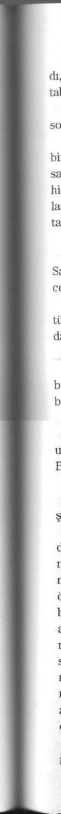

geçmesini bekleyip, nezaket kurallarına tam tamına uyarak, ev sahibiyle vedalaştılar. Muhtarın oğlu misafirleri köyden birkaç yüz metre uza
ğa kurulmuş olan kampa kadar geçirmeyi teklif etti.
Muhtarın sunduğu puronun tadını çıkararak, yavaş yavaş, konuşmadan yürüyorlardı. Birden gölgelerin içinden üç adam fırlayıp onu ve Yasir'i ortalarına alıp iki yanı tuttuğunda Ahmed ne olup bittiğini fark etmeye vakit bulamadı. Bir dakika sonra Yasir keskin bir çığlık atarak bağırsaklarına saplanmış bir hançerle yere düşüyordu. Muhtarın oğlunun elleri kana bulanmıştı, Yasir'in kanına. Ortaya çıkıveren üç adam, Yasir'in cesedini de alıp hemencecik kayboldular; Ahmed'in ağzını açıp da tek kelime söyleyecek fırsatı olmamıştı. Muhtarın oğlu, Ahmed'in kusmasını önleyemedi. Bir mendille ellerindeki kanı silerken, Ahmed'in kusmasının bitmesini bekliyordu.
- Niçin? diye sordu Ahmed, kendini toparlayınca.
- Bay Tannenberg ihaneti affetmez. Bunu sizin bilmenizi istedi.
- Beni ne zaman öldürecek? diye sorma cesaretini buldu.
- Bilmiyorum, bana söylemediler, yanıtını verdi yalnızca muhtarın oğlu.
- Beni bırak, yalnız kalmak istiyorum.
- Size eşlik etmemi emrettiler.
Ahmed adımlarını sıklaştırarak hiç tınmadan Yasir'in hayatına son ve
Coraline
ren bu adamdan uzaklaştı, ama adam aynı hızda yürüyerek ona yetişti.
- Bana Bay Tannenberg'in sizi hep izlediğini, izlemese bile, eğer ihanet ederseniz sizin canınızın da alınacağını söylememi buyurdular, tıpkı benim Bay Yasir'in canını aldığım gibi.
- Bundan eminim, şimdi bırak beni.
- Hayır, bırakamam, size eşlik edeceğim, bir kazaya uğrayabilirsiniz.
Ayed Sahadi kervana yaklaştı. Sırtından yükleri inen develer dinleniyorlardı. Uzun boylu bir adam onları kucaklayarak karşıladı.
- Allah'a emanet ol.
- Sen de Allah'a emanet ol, yanıtını verdi Sahadi.
- Gel bizimle çay iç, diyerek onu davet etti.
- Gelemem, dönmem lazım. Ama senden bir ricam var, karşılığını veririm.
- Ayıp ettin, biz arkadaşız.
- Biliyorum, onun için senden rica ediyorum. Al bunu, diyerek bir paket verdi. Bir an önce Kuveyt'e ulaştır.
- Kime teslim edeceğim?
- Adres şu zarfın üstünde yazılı; onu da paketle birlikte vereceksin.
Buyur şunu al, Allah seninle olsun.
Adam Ayed Sahadi'nin uzattığı bir tutam doları aldı. Saymasına gerek yoktu, her zamanki gibi iyi bir miktar olduğu kesindi. Alfred Tan-550
nenberg her zaman ona yaptırdığı işlerin karşılığını iyi öderdi.
Gündoğumunun sessizliği bütün kampı ayağa kaldıran bir çığlıkla bozuldu.
Picot, arkasında Fabiân'la evden dışarı çıktı, taş gibi kalakaldılar; onlar gibi, ne oluyor diye yataktan fırlayan öbürleri tek kelime edemediler.
Orada, kampın tam ortasında, bir direğe bağlanmış, bir erkek cesedi duruyordu. İşkenceden geçmişti. Kolları bacakları parçalanmıştı, elleri ayakları yoktu. Gözlerinin yuvalan boştu ve kulaklarını da koparmışlardı.
Cesedin parçalanmış görüntüsüne dayanamayanların mideleri bulandı, kendilerini tutamayıp kusmaya başladılar; kimisi de donup kalmıştı, ne yapacaklarını bilemiyorlardı; kesilip biçilmiş cesedi kaldırmak için askerlerin geldiğini görünce ferahladılar. Picot:
- Bir an önce buradan gitmek istiyorum! Hepimizi öldürecekler! diye bağırarak öfkeyle Fabiân'la ve sekreteri Albert Anglade'yle paylaştı
ğı eve girdi.
- Burada olanların bizimle ilgisi yok, dedi Fabiân.
- Öyleyse, kiminle ilgisi var? diye azarladı Picot.
- Sakin ol! Sinirlenerek bir yere varamayız.
Albert Anglade kusup içini boşalttıktan sonra, rengi uçmuş ve gözleri yaşlı lavabodan çıktı.
- Bu ne dehşet! Bu kadar da olmaz, diyebildi.
Coraline
Marta Gomez üç erkeği şaşkınlık içinde bırakarak eve girdi, sandalyeye çöktü, bir sigara yaktı ve hiçbir şey söylemedi.
- Marta, iyi misin? diye sordu Fabiân.
- Yok, iyi değilim. Harap bir haldeyim, burada neler oluyor bilmiyorum, ama burası bir mezarlığa dönüyor, ben... bence artık gitmeliyiz, mümkünse bugün.
- Sakin ol, diye Fabiân rica etti. Hepimiz bir karar vermeden önce sakinleşmeliyiz. Bir an önce Clara'yla ve Ahmed'le konuşmalıyız. Onlar ne olup bittiğini bilir, bize de anlatmak zorundalar.
- O adam... o adam Ahmed'le birlikte gelen adamdı, dedi Marta.
- Evet, o Yasir'in parça parça edilmiş cesediydi, Ahmed'e göre Bay Tannenberg'e çalışıyordu, dedi Fabiân.
- Fakat... böyle bir şeyi kim yapabilir? diye soru sormayı sürdürdü Marta.
- Hadi canım, sakinleş, diye Fabiân teselli etmeye çalıştı.
- Büyükbabanı görmek istiyorum.
Ahmed'in sesi korkudan perişan olmuş bir adamın sesiydi. Clara onu bu durumda, perişan, gözleri kıpkırmızı, ağlamaklı, elleri titrer görünce şaşırdı.
- Ne oldu?
- Görmeye çıkmadın mı? Büyükbabanın günaydın demek için bize 351
yaptığı gösteriyi kaçırdın mı? Onu öldürmekle kalmamış cesedini böy-le aşağılamak gerekli miydi? O bir canavar... bu adam bir canavar ...
- Ne söylediğini anlamıyorum, dedi Clara, kekelemeye başlamıştı.
- Yasir... Yasir'i öldürtmüş ve cesedini parçalamış. Burada teşhir etti kampın ortasında, hepimiz görelim diye, bizim tanrımız olduğunu unutmayalım diye, hepimizin efendisi olduğunu...
Ahmed ümitsizce ağlıyordu, korumalara falan dikkat ettiği yoktu, korumalar bu zayıf adama karşı duydukları küçümsemeyi gizlemeden onu seyrediyorlardı.
Clara'nın koşarak dışarı çıkmak, çığlık atmak geldi içinden, ama kendini tuttu, paniğe kapılırsa adamların onu da büyükbabasını da saymayacağını biliyordu.
- Büyükbabam seni kabul etmez, dinleniyor.
- Onu görmem lazım, beni ne zaman öldüreceğini bilmek istiyorum, diye bağırıyordu.
- Sus! Benim önümde böyle saçmalıklar söyleme. Git buradan. Bağdat'a dönüp büyükbabamın sana verdiği görevleri yap. Şimdi bizi rahat bırak.
Albay'ın gelmesi Clara'nın zihnini karıştırdı, adamın soğuk bakışlarından yılmamaya çalıştı.
- Bay Tannenberg'i görmek istiyorum.
Coraline
- Kalkıp kalkmadığını bilmiyorum. Burada bekleyin.
Clara, Albay'ı Ahmed'le salonda bırakıp büyükbabasının odasına gitti. Aliya yaşlı adamı tıraş etmeyi yeni bitirmişti, Doktor Necib damarından iğneyi çıkarmaya hazırlanıyordu, geride ne serum torbası ne de plazma torbası, hiçbir şey bırakmamıştı.
- Size fazla zorlamamanızı söylemiştim, dedi Clara'ya selamlama yerine.
- Kesin artık; hazırlanmam bitince bizi bırakın; size bugün iyi olmam gerekiyor dedim, dedi Tannenberg.
- Ama daha hazır değilsiniz, artık yaptıklarımın sorumluluğunu kabul etmiyorum...
- Beni torunumla yalnız bırakın, diye buyurdu Tannenberg.
Hemşire ve hekim çıt çıkarmadan odadan ayrıldılar. Tannenberg'den korkuyorlardı. Ona karşı gelmenin tehlikeli olduğunu biliyorlardı.
- Ne var, Clara?
- Albay seni görmek istiyor. Çok ciddi görünüyor. Ahmed de geldi...
diyor ki Yasir'in cesedini ortaya bırakmışlar... senin onun öldürülmesini ve şerefiyle oynanmasını emrettiğini söylüyor...
- Aynen öyle. Şaştın mı? Kim önüme çıkarsa başına ne geleceğini iyi bilsin. Bu hem buradaki adamlara bir uyarı, hem de benim Washington'daki arkadaşlarıma.
- Ama... ama Yasir ne yaptı ki?
- Bana komplo 'kurdu, arkadaşlarıma benim casusluğumu yaptı, arkamdan iş çevirdi.
-Nereden biliyorsun?
- Ne? Nereden mi biliyorum? Ben burada, bu yatakta hareketsiz yatarken Yasir'in yaptıklarını bilmem seni şaşırtıyor mu? Ama ben buradayken de her yerde gözüm kulağım vardır benim.
- Onu öldürmek gerekli miydi? demeye cesaret etti Clara.
- Gerekliydi, ben gerekli olmayan bir şeyi asla yapmam. Şimdi Albay'a söyle gelsin, o senin kocan olacak bok herif gitsin, o ne yapacağını bilir.
- Onu öldürecek misin?
- Belki, her şey bundan sonraki günlerde olacaklara bağlı.
- Lütfen... lütfen, onu öldürme.
- Bebeğim, senin hatırın için bile işlerimin gereğini yapmaktan vazgeçmem. Eğer tereddüt edersem, onların yapabileceğimi bildikleri şeyi yapmazsam, onlar bize yaparlar. Kural bu, bu kuralı bozamam. Yasir'in ölümü George'un, Enrique'nin ve Frankie'nin yaşadığımı anlamalarını sağladı; buradaki ortaklarım da, Albay dahil, mesajı aldılar. Şimdi git, dediğimi yap.
- Ne diyeceğim? diye mırıldandı Clara.
- Kime?
- Picot'ya, Marta'ya... Ne oluyor diye soracaklar...
- Onlara hiçbir şey söyleme. Kazılarını yapsınlar Coraline
, gitmeden önce Kitabı Mukaddesi bulmaya çalışsınlar, yoksa gitmelerine izin vermem.
İki saat sonra kampta her şey normale dönmüştü. Sahte bir normal-likti bu. Clara nereden güç bulduğunu bilmeden, ondan olan biteni açıklamasını isteyen Picot'yla zor bir görüşme yapmış, sonra da bir grup işçiyle birlikte kazı yapmaya gitmişti.
Ne Picot ne de öbürleri onunla tapınağa gelmek istemediler, onu da bütün bu olanlardan sonra hâlâ rutin çalışmayı sürdürebildiği için kınadılar. Hiçbirini dinlemedi, söyledikleri acı sözlere tepki vermedi; başka seçeneği olmadığını biliyordu, biraz duraklasa ya da zayıflık gösterse yıkılırdı, yıkılmaya hakkı yoktu.
Uzaktan uzaktan helikopterlerin kalkış seslerini duyduğunda kazı yapıyordu. Ahmed'in gittiğini anlayınca içi rahatladı. Artık onu sevmiyordu, yine de büyükbabasının onu öldürtmesine dayanamazdı. Bu kendini aldatmasını imkânsız hale getirirdi. Onun uzakta olması daha çok işine geliyordu.
Albay da onunla birlikte gitti mi, bilmiyordu, fakat ne olursa olsun, büyükbabası daha ölmediğini, dizginleri hâlâ elinde tuttuğunu göstermişti.
Öğlene doğru birkaç gün önce buldukları kata giden delikten inmeye karar verdi. Ayed Sahadi ondan bunu yapmamasını rica etti, fakat Clara ona susmasını buyurdu. Her gittiği yere sessizce arkasından ge-355
len Gian Maria, birlikte aşağı gelmeyi önerdi.
- Olur, ama önce ben ineceğim, oranın ne durumda olduğunu gör-dükten sonra senin yanıma gelmene karar veririm.
Makaralara sarılı iplere bağlanarak, topraktaki kapkaranlık delikten kaya kaya ayakları sağlam toprağa basana dek indi. Acımış yağ kokuyordu ortalık, midesi bulandı, ama kendini tuttu. Günler önce buldukları, Picot ile Fabiân'ın keşfedip de tapınağın başka bölgelerine geçen bir kapı olduğunu söyledikleri o salonu araştırmakta kararlıydı.
Beline bağladığı fenerleri yakıp kendine göre stratejik gördüğü noktalara yerleştirdi. Sonra duvarı ve yeri elleriyle yoklamaya girişti.
Zaman kavramını yitirmişti, ara sıra iyi olduğunu bilsinler diye ipi çekiyorsa da, Gian Maria'yı yanına göndermeleri sinyalini vermiyordu.
Ona ancak çağırırsa inmesini tembih etmişti.
Nasıl olduğunu bilmiyordu, ama elindeki ıspatulanın sapıyla vurdu
ğu duvarlardan biri gümbür gümbür yıkılıverince molozlar ve toprak yıkıntısı altında gömülüp kaldı. Gözlerini açtığında hareketsiz yatıyordu, korktu, çünkü sağ bacağının üzerinden bir şey geçiyordu. Nefes almaya bile cesaret edemedi, bacağının üstünden geçen şey ya bir yılan ya da bir büyük fareydi.
Saniyeler ona sonsuzluk gibi uzun geldi; eğilip bakmaya cesareti yoktu, yere çivilenmiş gibi öylece duruyordu. Birden bir ışık yüzünü Coraline
aydınlattı ve ona seslenen bir erkeğin sert ayak sesleri onu kapıldığı panikten kurtardı.
- Clara, iyi misin?
Yarıkaranlıkta Gian Maria'yı fark etti, o ana kadar yanında bir insan bulmaktan bu kadar sevinmemişti.
- Kımıldama sakın, burada bir şey var...
- Nerede? Ben bir şey görmüyorum. Ne oldu?
- Görmüyorsun, herhalde görmüyorsun...
- Clara, bir şey yok, hiçbir şey görmüyorum.
Ayaklarına bakacak cesareti bulduğunda gerçekten de hiçbir şey yoktu. Hayvan ilgilenmeden onun yanından geçip gitmişti. Ferahlayarak içini çekti, elini Gian Maria'ya uzattı.
- Ya bir yılan ya da bir fare geçti sanırım, ne olduğunu bilmiyorum, ama bacaklarımın üzerinden geçti. Bereket versin ayaklarımda çizme var.
- Amma da korkmuşsun! Neden buradan çıkmıyoruz?
- Gitmek mi istiyorsun? Niye indin öyleyse?
- Sana bakmaya indim, merak ettim.
- Beni fazla merak ediyorsun.
- Evet, gerçekten öyle, diyerek kabul etti rahip.
- Bana yardım et, şuna bir bakmak istiyorum, işçileri indirip buraları temizlemelerini isteyeceğim. Besbelli tapınağın başka bir katındayız.
Burayı aydınlığa çıkarmak gerekiyor.
554
- Pek kolay olmayacak, diyerek fikrini belirtti Gian Maria.
- Evet, kolay olmayacak, ama uyumamalıyız, vaktimiz yok.
Clara bir işçi vardiyasını delikten aşağı gönderdi, başka bir grup işçi de dışarıyı temizliyordu. Bütün bölgeler için kuvvetli lambalar ısmarladı. Gece de çalışacaklardı, bir tek dakikayı bile ziyan etmek istemiyordu, ama aslında geceleri de çalıştırmak için fazladan para ödemeye söz verdiği adamların hayatını tehlikeye atıyordu.
Picot'nun kızacağını biliyordu, ama umurunda değildi. Nasıl olsa, kazıyı o yürütecekti ve finansmanı da büyükbabası yüklenecekti. Konumunun ağırlığını gösterme zamanıydı.
Lion Doyle, Marta'nın ona uzattığı faksı okudu:
- Sanırım senin ajansından gelmiş, bana onu az önce Ante verdi.
Mektupları dağıtıyor, seni bulamamış.
- Teşekkür ederim.
Faksı ona gönderen Photomundi'nin direktörüydü, fakat Lion faksta yazılı olan satırların ardında patronu, Global Group başkanı Tom Martin olduğunu anladı: Epeydir senden haber alamıyoruz, müşterilerimiz haber gelmediği için sabırsızlanıyorlar. Söz verdiğin röportaj ne oldu? Yapamayacaksan, Coraline
geri gel, çünkü basın organları tek tek fotoğraflar için ödeme yapmaya devam etmeyecekler.
Acele haberlerini bekliyorum, olmuyorsa dön.
Tom Martin onu sıkıştırıyordu, çünkü müşteriler onu sıkıştırıyordu.
Alfred Tannenberg'i ölmüş görmek isteyenler daha fazla bekleyemiyor-lardı. Global Group başkanı da ona Tannenberg'i hemen öldürmeyecek olursa sözleşmeyi bozacaklarını bildiriyordu.
Peşin olarak iyi para almıştı, fakat Martin'in bu parayı geri isteyece
ğini biliyordu.
Büro olarak kullandığı depoya gitti, orada Fabiân'ı öbür iki arkeologla birlikte buldu, Fabiân, Ante Plaskiç'e bütün bilgisayar aletlerini kutulara koyması ve arşivlerin bir listesini yapması emrini veriyordu.
- Bir faks yollamak istiyorum, dedi.
- Yolla, bakalım, yanıtını verdi Fabiân. Bu sabah patronun sana bir tane göndermiş, onu geri kalan postayla birlikte gönderdiler.
- Evet, durum çok kötü, savaş ortamı içeren bir röportaj istiyor, burada da öylesi yok. Görünen o ki, gazeteler artık kazılarla ve arkeologlarla ilgili röportajlara ilgi duymuyorlar.
- Biz bir savaşın arifesindeyiz, dedi arkeologlardan biri.
- Evet, öyle. Picot'yla konuşup Bağdat'a nasıl gidebilirim soracağım.
- Bekle, hepimiz gidiyoruz. Yves artık gitmek istiyor, bir gün önce 555
olması bir gün sonra olmasından daha iyi diyor, ama Ahmed'in bize yola çıkış işaretini vermesini bekliyoruz, özellikle de şu meşhur Albay'ın bulduklarımızı sergi için yanımızda götürmemize müsaade çıkarmasını beklememiz gerekiyor, diye açıkladı Fabiân.
- Tamam, beklerim. Ante, senin bilgisayarlarından birini patronuma bir haber göndermek için kullanabilir miyim?
- Şuradaki yazıcıya bağlı, diye eliyle gösterdi Hırvat.
- İnternet kullanamamamız büyük bir zaman kaybı, diye sızlandı Lion.
- Evet, ama burada bu iş için telefon hattı yok, elimizde ne varsa onunla idare et. Ne istersen yaz, şu tepsinin üstüne koy. Bu akşam biri faksları göndermek ve mektupları postaya vermek için Tel el Mukayyer'e gidecek.
Lion Doyle'un sahte patron Photomundi'ye yanıtı kısacıktı: Bu hafta röportajı alacaksın.
31
Tom Martin sekreterinin az önce getirdiği zarfı açtı. Bu zarfı bekliyordu. Photomundi'nin direktörü ona telefon edip Doyle'dan bir faks Coraline
geldiğini az önce bildirmişti.
Kısa satırı okuyup kâğıdı yırttı. Derhal gizemli Bay Burton'a telefon edecekti. Adam kızıyordu. Birkaç gün önce telefonda ona böyle demişti. Peşin olarak çok para ödediğini hatırlatmış, sonuç istediğini söylemişti. Eğer Irak'a gönderilen adam Tannenberg ile torununun nerede olduğunu bulduysa, aralarına sızması gerekirdi, neden sözleşmeyi yerine getirmiyordu?
Global Group başkanı Irak'ta görev yapmanın kolay olmadığını açıkladı, eğer adamı sözleşmenin gereğini henüz yerine getiremediyse demek ki olanak bulamamıştı, uygun zamanı bekliyordu herhalde; sabretmesini rica etti, fakat Bay Burton ona artık sabırlarının kalmadığım söyledi.
Bay Burton'ın ona verdiği son numarayı bulup çevirdi. Bu İngiltere'de bir cep numarasıydı, ama, aslında Bay Burtonin şu anda nerede olduğunu bilmiyordu.
- Buyurun.
- Bay Burton mı?
- Evet, söyleyin, Bay Martin.
- Ah, benim olduğumu biliyordunuz demek!
- Buyurun, söyleyin.
- Bu hafta görevin yapılacağını söylediler.
- Garanti ediyor musunuz?
- Adamımın bana söylediğini size aktarıyorum.
556
- Görevin gerçekten yapıldığını ne zaman bileceğiz?
- Size bu hafta iyi haberler verebileceğimi söyledim ya.
- Kanıt isterim, iyi haber yetmez.
- Bu, Bay Burton, hepsinden zor, en azından ilk anda.
- Sözleşmemizde yazılı.
- Ben sözleşmelerimi yerine getiririm, Bay Burton.
- Getirmelisiniz, Bay Martin.
- îyi, sizi yine ararım.
- Haberlerinizi bekliyorum.
Hans Hausser telefonu kapadı ve gözlerini yeniden, Global Group başkanının telefonu araya girene kadar, okuduğu kitaba çevirdi.
Oldukça geç bir vakitti, saat yediyi geçiyordu, fakat Carlo'ya, Mercedes'e ve Bruno'ya telefon etmese olmazdı. Canavar'ın torunuyla birlikte yuvalandığı Irak'ın bu yitik köyünde neler olup bittiğini öğrenmek için sabırsızlıkla bekliyorlardı.
Ayağa kalktı, trençkotunu aldı, kızı Berta telaşlanmasın diye gürültü yapmamaya çalışarak dışarı çıkmaya hazırlandı. Ama o sırada çocuklarına akşam yemeği yediren Berta'nın kulakları keskindi, tıkırtıyı işitip antreye çıktı.
- Nereye gidiyorsun, baba?
- Biraz bacaklarımı hareket ettirmem lazım.
Coraline
- Ama vakit çok geç, hem de yağmur yağıyor.
- Berta, lütfen, bana çocuklarından biriymişim gibi davranmaktan vazgeç! Bütün gün evdeydim, biraz yürümek istiyorum. Biraz dolaşıp hemen döneceğim.
Kızının yanıt vermesine fırsat vermeden kapıyı kapadı. Onu üzdüğünü biliyordu, ama elinden bir şey gelmezdi, hemen haber vermezse arkadaşlarına sadık davranmamış olurdu.
Profesör Hausser bir süre yürüyüp evinden uzaklaştı. Sonra bir otobüse bindi, dört durak sonra indi, bir telefon kabini aradı.
Carlo Cipriani kliniğinde, muayenehanedeydi, oğlu Antonino'nun böbreğini aldığı bir arkadaşının ameliyatına yardım ediyordu. Sekreteri Maria, Doktor Cipriani'nin odasına döner dönmez onu arayacağına söz verdi.
Çevirdiği ikinci numara Bruno Müller'in hiç ayrılmadığı cep telefonuydu.
- Bruno...
- Hans... nasılsın?
- İyiyim, dostum, iyiyim. Haberlerim var: Görevin bu hafta yapılaca
ğını bana garanti ettiler.
- Emin misin?
- Bana söyledikleri bu, sözlerini tutacaklarını umuyorum.
3 5 7
- O kadar uzun yıllar bekledik ki, sanırım bir hafta daha bekleyebiliriz...
- Evet, ama itiraf edeyim ki, her zamankinden daha fazla sabırsızım.
Umarım bu iş biter de normal yaşamlarımıza döneriz.
Bruno Müller birkaç saniye sustu. Göğsünde arkadaşının çektiğini bildiği sıkıntının aynısını duyuyordu. Tannenberg'in öldüğünü öğrenmek için içlerinde şiddetli bir istek duyuyorlardı. O gün, Hansin dediği gibi, "yaşayacaklardı" bugüne kadar yaşadıklarından farklı bir biçimde yaşayacaklardı.
- Carlo'yla ve Mercedes'le konuştun mu?
- Carlo, oğlu Antonino'yla ameliyathanedeymiş. Mercedes'i de şimdi arayacağım. Onun sabırsızlığı beni hep korkutuyor.
- Carlo'yla konuşunca ona küçüğü sorma. Ondan haberin yokmuş
gibi davranmayı sürdür, perişan olmuş.
- Oğlunun nereye gittiğini henüz bilmiyor mu?
- Bilmiyor, öbür gün onunla konuştum. Bana dedi ki, ne mektup göndermiş ne telefon etmiş, evde ona hep oğlunun iyi olduğunu bildiklerini söylüyorlarmış, ama nerede olduğunu söylemiyorlarmış, sadece derin bir bunalım geçirdiğini söylüyorlarmış.
- Ya Araştırma ve Güvenlik Bürosu başkanı olan arkadaşı, ona yar
Coraline
dım edemiyor mu?
- Sanırım çocuk haber bırakmış, demiş ki, babam beni ararsa onunla ebediyen ilişkimi keserim demiş.
- Çocuklar hem neşe hem de acı kaynağıdır.
- Evet, aynen öyle, onlar olmadan biz bir hiç olurduk.
- Biliyorum, dostum, biliyorum. Pekâlâ, Mercedes'i arayacağım, bir şey öğrenirsem hemen sana bildiririm.
Mercedes Barreda makyajını bitirmek üzereydi. Bu gece Lise'ye gidecekti. İnşaat firmasının bir kredi hesap hattını açık bulundurduğu bankalardan birinin yetkili danışmanının locasına davetliydi, bu davetten kaçamamıştı.
Operayı özellikle sevdiği söylenemezdi, oysa klasik müzik tutkunuydu. Öyle gösterişli, sanat değeri olmayan sosyal etkinliklere katılmaz, görmek ve görünmek için bir yere gitmeyi reddederdi.
Bu sosyal gösteriye katılmak onu fazlasıyla tedirgin ediyordu, bu yüzden de pek keyfi yerinde değildi.
Cep telefonunun sesini duydu, önce yanıt vermemeyi aklından ge
çirdi. Sonra birden sıçradı, çalan kendi kişisel telefonu değildi, günler önce özel olarak Hans'ın araması için satın alıp da internetten numarasını gönderdiği telefondu bu.
- Evet, derken sesi kederliydi.
- Yoksun sandım.
558
- Bu cebin sesini öbürküyle karıştırmışım. Söyle bakalım, işler nasıl gidiyor?
- İyi, galiba bu hafta olacak.
- Garantimiz var mı?
- Bana kesin konuştular, bize düşen yalnızca beklemek.
- Beklemekten bıktım.
- Hadi canım, hepsi hepsi bir hafta kaldı şunun şurasında, son anda sinirlerimizi bozacak değiliz ya.
- Haklısın. Ne zaman ararsın beni?
- Haber alır almaz.
- Evet, hemen ara, lütfen.
- Biliyorsun ki hemen haber veririm, ilk arayacağım sen olacaksın.
- Teşekkür ederim.
- Kendine iyi bak.
- Sen de.
Hans Hausser telefon kabininden çıkıp yağmur altında sırılsıklam oluncaya kadar yürüdü, eve dönmek için bir taksiye bindi. Buz gibi donmuştu ve öksürmeye başlamıştı. Kızı Berta yağmurda gezip üşüttü
ğü için azarlayacaktı.
Coraline
Robert Brown evinin kapısını açtı. Paul Dukais birkaç kez zile basmıştı, sabırsızdı, oysa sabırsızlık Planet Security firması başkanının huyu değildi.
- Hepimiz burada mıyız? diye sordu Dukais, Brown'a.
- Evet. Ralph Barry yeni geldi, ben de mentoruma telefon ettim. Acil olan şeyi sen söyler söylemez onu görmeye gideceğim.
Dukais, Brown'm salonuna girdi ve bu yerin yalın zarafetine hayranlık duydu, bu sade güzellik Antik Dünya Vakfı başkanının ince zevkini yansıtıyordu. Ralph Barry elinde bir viski kadehiyle oturuyordu. Yani, Barry'nin de orada olması daha iyiydi, çünkü vakfın kurucusu olarak işin bir bölümünü o yürütüyordu.
Brown'in hizmetkârı Ramón González, kibarca ne içmeyi arzu ettiğini sordu.
- Bir duble viski, buz olsun, su olmasın.
Kadehi eline aldığında, Ramón salondan çıkınca, iki adama bakıp Yasir'in katlini haber verdiğinde nasıl korkacaklarını düşündü.
- Yasir'in öldürülmesini Alfred Tannenberg emretmiş. Fakat canını almakla yetinmemiş. Ellerini ayaklarını kesmelerini, gözlerini çıkarmalarını emretmiş, hepsini bir kutuya koyup, mühürlemiş ve bize hediye olarak göndermiş. Daha yeni geldi, onun için sizleri çağırdım. Senin 559
mentoruna ve ortaklarına hitaben Tannenberg'in el yazısıyla yazılmış
bir de mektup var. Kahire'deki adamlarımdan biriyle konuşmayı başardım, o da Ahmed'le konuşmuş, bana diyor ki, Yasir'in öldürülmesinden pek etkilenen Ahmed şu anda çılgın gibiymiş.
Paul Dukais Yasir'den kalanları göstermeyi de ihmal etmedi. Metal bir kutuyu açtı, onun da içinden başka bir kutu çıkardı, ikinci kutuyu açınca, kurumuş kanla karışık bir et ve kemik yığını, çürümek üzere olan iki göz ortaya çıktı.
Antik Dünya Vakfı başkanı, yüzü bembeyaz kesilmiş, ayağa kalktı, konuşamıyordu, dehşetten ağzı açılmış gözleri dışarı uğramıştı.
Ralph Barry de aynı şekilde şoke olmuş durumdaydı. Her ikisi de tek kelime edebilecek durumda değildi. Barry mide bulantısıyla birdenbire dışarıya koştu.
- Sakla şunu! diyerek isterik bir çığlık attı Robert Brown.
Paul Dukais kutuyu kapadı yeniden metal kutunun içine koydu. Metal kutuyu bir anahtarla kilitledi, anahtarı cebine koyup gözlerini Robert Brown'a dikti. Gördü ki, Robert Brownin yüzü, Yasir'in kalıntılarını görünce çılgına dönmüştü.
- Tanrım, ne dehşet bu! Tannenberg şeytanın teki!
Dukais yanıt vermedi. Düşündü ki, Robert Brown ne ondan ne de Tannenberg'den daha iyi bir insan sayılırdı; aynı soygunlara ve cinayet
Coraline
lere o da katılıyordu, uzaktan katılmasından başka bir fark yoktu, böylece çamur üstüne sıçramıyordu. Paralı katil olarak, kullandığı adamlarla arasındaki tek fark, onların yapılan işe hayatlarını koymalarıydı; Robert Brown ise o sırada viskisini içerek verdiği görevin sonucunu beklerdi.
Ralph Barry kusarken zorlanmaktan yüzü karmakarışık olmuş döndü.
- Sen orospu çocuğunun birisin! diye Dukais'e bağırdı.
- Bunu görmek benim de hoşuma gitmedi, dedi Dukais, kanepeye yakın bir sehpanın üstüne koyduğu kutuyu eliyle göstererek. Ama elimizde olan bu ve bunu da ben herhalde tek başıma yutacak değildim.
Sizler de işin içindesiniz, öyleyse hiçbir ayrıntıyı sizden esirgeyecek değilim.
Paul Dukais ayağa kalktı ve viski şişesinden kendine cömertçe koydu.
- Viski içmek ağızdaki tatsızlığı giderir.
Ne Brown ne de Barry yerlerinden kımıldamadılar, hâlâ Yasir'in kalıntılarını görmenin etkisindeydiler. Sonunda Robert Brown dalgınlı
ğından sıyrılarak gelen haberi sordu.
- Ahmed ne demiş?
- Ahmed ve benim Safran'daki adamlarım Alfred'in ölmekte olduğu konusunda birleşiyorlardı. Bir hafta daha yaşamaz diyorlardı, ama ya-nıldılar. Onun bize "hayattayım" deme biçimi Yasiri öldürmek oldu, oraların hâlâ onun sahası olduğunu ve onun müsaadesi olmadan yeri-360
mizden bile kıpırdayamayacağımızı bilmemizi istiyor.
- Fakat, Ahmed ne demiş? diye Robert Brown ısrar etti.
- Kahire'deki adamım Ahmed'in tek istediğinin koşarak kaçmak olduğunu söylüyor. Ama ne olursa olsun görevini yapacak. Adamım ona açıkça, bu işten kimsenin öyle istediği zaman elini kolunu sallayarak çıkamayacağını söylemiş. Hiçbir değişiklik yapmadan bekleyeceğiz. Şu lanet savaşın başlamasına az bir zaman kaldı.
- Ya Clara Tannenberg? diye sordu Ralph Barry.
- Görünüşe bakılırsa Ahmed onun, aynı büyükbabası gibi bir şeytana dönüştüğüne inanıyor.
- Tabletleri bulmuşlar mı?
- Hayır, Ralph, bulamamışlar, ama galiba Clara birkaç ton daha toprak taşımaya hazır görünüyor. Ha! Ahmed, Picot'nun Clara'yı, Clara'nın da büyükbabasını bütün buluntuları Irak'tan çıkarmaya ikna ettiğini haber vermiş. Birkaç Avrupa başkentinde büyük bir sergi düzenlemeyi tasarlıyorlar, ayrıca buraya getirmeyi de düşünüyorlar, böylece er ya da geç seni arayacaklar. Sen şu Picot'nun arkadaşısın, değil mi?
Ralph Barry viskisinden iri bir yudum aldı ve Dukais'e yanıt vermeden önce içini çekti.
- Tanışıyoruz. Akademi dünyasında bir yerlere gelmiş olan herkes birbirini tanır.
Coraline
- Yani Safran'dan çıkan eserler geri kalanlarla birlikte gelmeyecek, diye mırıldandı Robert Brown.
- Hayır, bu da Clara ile büyükbabasının küçük sürprizlerinden bir tanesi. Anlaşılan Alfred onların satışına karşı çıkmıyor, eserlerin kaybedilmesine razı, ama önce torununun dünyanın yarısını onlarla birlikte gezmiş olması şartıyla. Sanırım Ahmed bizim sabırlı olmamız gerektiğini düşünüyor, çünkü sadece bir zaman meselesi.
- Çıldırmış o! dedi Robert Brown küçümseyerek.
- Bana sorarsanız hâlâ aklı başında, dedi Paul Dukais.
Planet Security firması başkanı elindeki evrak çantasını açtı ve içinden üç dosya çıkarıp Robert Brown'a uzattı.
- Burada her şeyin ayrıntılı raporu var, son günlerde Safran'da olup biten her şeyin detayları, bir genç hemşire ile iki muhafızın öldürülmesi de dahil.
- Peki, bunu bize neden söylemedin? Neler olmuş, neler geçmiş? diye sordu her seferinde biraz daha değişen Ralph Barry.
- İşte söylüyorum ya. Raporda okursunuz. Benden Tannenberg'in gerçek sağlık durumunu sordunuz, ama Tannenberg'i görmek mümkün değildi, hele Safran'a gittikten sonra hiç. Onun için adamlarımdan biri odasına girmeyi başardı; anlaşılan aksilikle karşılaşınca, o da hemşire ile iki korumayı ortadan kaldırmak zorunda kaldı. Tannenberg'in yaşlı hizmetçisini de yaraladı. Alfred'i bir sürü alete bağlı olarak gördü, son 361
nefesinde gibi görünüyordu, ama anlaşılan o ki yeniden canlanmış.
Hepsi burada. Şimdi kararı size bırakıyorum; herhangi bir değişiklik yapıyor muyuz yapmıyor muyuz bana söyleyeceksiniz.
- Hayır, değişiklik yapmayacağız, öngörülen plandan ayrılmayaca-
ğız, dedi Robert Brown.
Paul Dukais ayağa kalkıp vedalaşmadan çıktı. Brown ve Barry kadar o da sarsılmıştı, ama bunu göstermek istememişti. O en iğrenç nedenlerle, en korkunç biçimde insan öldürmeye hazır adamların örgütünü yönetiyordu, yani bir kutuya konmuş iki ayak, iki el, iki göz için etkilenmiş görünmesinin âlemi yoktu.
Onu rahatlatan tek şey, eski yeşil berelilerin albayı Mike Fernândez'in ona planın titizlikle hazırlandığını, rotasından çıkması için bir neden olmadığını bildirmesiydi. Mike'a elindeki askerlerin hepsinden fazla güveniyordu, o planın yolunda gittiğini söylüyorsa, yolunda gidiyor demekti.
Robert Brown ile Ralph Barry, ikisi de kendi düşüncelerine gömülmüş, bir süre konuşmadılar. Sanat ve arkeoloji dünyasının iki seçkin adamı epeyce sarsılmışlardı. En kötüsü, diye düşünüyordu Robert Brown, mentorunun tepkisi olacaktı. George Wagner öfkeden kuduracaktı, karşısın-dakinden daha yüksek sesle tek kelime etmes Coraline e bile... En fazla soğuk duruşundan korkardı; bakışlarındaki sertlik bildiği her şeyi unutturacak kadar zihnini karıştırırdı. Aslmda tıpkı Alfred'e benziyordu, tek farkı Washington'daki duvardan duvara halı döşeli odalarda yapardı işini, oysa Tannenberg işini Doğu'nun karanlık ve dar sokaklarında yürütürdü.
- Telefon edeceğim, bir dakika beni bekle, diye rica etti Ralph Barry'den.
Ralph Barry olur dedi. Patronunun zor bir konuşma yapacağını biliyordu. George Wagner meydan okumalara boyun eğecek adam değildi, eski dostu Tannenberg'inkine bile.
Adamlar bitkin düşmüştü. Clara dinlenmelerine izin vermiyordu.
Son hafta, tapınaktaki molozları temizleyerek, tonlarca toprağı bo
şaltmışlardı.
Yves Picot onu istediğini yapmakta serbest bırakmıştı, Clara'nın iş
çileri zorladığı çılgınca çalışmaya hemen hemen hiç katılmıyordu.
Arkeologlar ekibi, Ahmed Hüseyni hadi gidiyoruz dediğinde hazır olunması için şimdiden malzemeleri ambalajlıyorlar, bir yandan da Clara'ya yardım ediyorlardı. Çoğu kez, Clara'nın kimi isteklerine hayır diyemiyorlardı. Ayed Sahadi de onu sürekli izliyordu.
Alfred Tannenberg amelebaşı gibi görünen askeri uyarmıştı, kampta 362
bir daha herhangi bir olay çıkarsa, bunu hayatıyla ödeyen o olacaktı.
Clara'yı Gian Maria da gözden kaçırmıyordu; bir an için gözden kaybetse telaşlanıp yerinden sıçrıyordu.
Fabiân ile Marta ellerinden gelen desteği veriyordu, neredeyse uyku uyumayan ve yemek yemekle bile vakit kaybetmek istemeyen Clara'da açığa çıkan bu istem gücüne şaşıyorlardı.
Sadece büyükbabasını ve Fatima'yı görmeye gitmek için kazıdan ayrılıyordu, onların yanında bir iki dakika kalıyor kalmıyor hemen çalışmaya dönüyordu.
Clara son günlerini yaşadığını bildiği büyükbabasının yanında kalamadığına üzülüyordu. Alfred Tannenberg artık iyice tükenmişti, yalnızca olağanüstü iradesi onu hayatta tutar gibiydi.
Fatima artık ayağa kalkabiliyordu, doğru dürüst bir iş göremiyordu, ama Doktor Necib'den evde efendisinin yanında kalmak için müsaade almıştı.
- Bayan Hüseyni!
Clara ona böyle seslenene dönüp bakmadı, elindeki ıspatula ve fır
çayla sütun başlığı kalıntısına benzeyen cismi temizlemeyi sürdürdü.
Biri onu kocasının soyadıyla çağırırsa yanıtlamamaya karar vermişti; bunu kimseye söylememişti, ama herkesin bunu fark edip uymasını bekliyordu. Fakat ses ısrarcıydı.
- Bayan Hüseyni...
Coraline
Sinirlenerek döndü. Henüz on yaşlarında görünen bir çocuk ona bakıyor, kızıp bağıracak diye korkuyordu. Ona hanımefendinin sinirli olduğunu söylemişlerdi. Clara'nın gülümsediğini görünce ferahladı.
- Ne istiyorsun?
- Eve gelmeniz gerektiğini söylemem için beni gönderdiler; Doktor Necib sizinle görüşmek istiyor.
- Ne varmış? diye kaygılanarak sordu.
- Bilmiyorum, bana yalnızca sizi bulup çağırmamı söylediler.
Clara bir sıçrayışta ayağa kalkıp küçük çocuğun peşinden yürüdü, çocuk koşarak kampa dönüyordu. Aklına kötü şeyler geliyordu. Doktor Necib onu çağırttıysa, bu büyükbabasının durumunun kötüleştiğini gösteriyordu.
Eve girdiğinde karşılaştığı sessizlik ona kötü bir şeyler olduğunu haber veriyordu. Büyükbabasının odası boştu, onu yerinde göremeyince kendini tutamadı, ağlayarak evden dışarı fırladı.
Küçük çocuk eliyle sahra hastanesini gösterdi. Onu orada bekliyorlardı.
Doktor Necib ve Aliya, Alfred Tannenberg'i yeniden canlandırmaya çalışıyordu. Yaşlı adam beyin enfarktüsü geçirince onu hastaneye taşımak zorunda kalmışlardı.
Bilinçsiz ve bedeninin yarısı felçli olan Tannenberg bilinçdışının derinliklerinden kaynaklanan bir yaşam savaşı veriyordu, ölüm elinde tırpanla onu kendine çekiyordu.
Sesini çıkarmadan hekimin ve hemşirenin yaptıklarına baktı. İkisi de tek söz söylemediler, yalnızca Doktor Necib ona bakıp eliyle ümitsizliğini belirtti.
Doktor Necib ona dönüp de kolundan tutarak hastaneden çıkarana dek ne kadar zaman geçti bilmiyordu.
- Daha ne kadar süre dayanır bilmiyorum, belki birkaç saat, bir gün... fakat yeniden kendini toplayabileceğini sanmıyorum.
Clara ağlamaya başladı. Zamana karşı verdiği savaşta yorulmuştu, özellikle de büyükbabası olmadan devam edemeyeceğini hissediyordu.
Yaşamak için onun yaşadığını bilmeye ihtiyacı vardı.
- Emin misiniz? diye kekeledi.
- Bu kadar nasıl dayandığına şaşıyorum. Beyin enfarktüsü geçirdi.
Bilincine tekrar kavuşacağını sanmam, ama kavuşsa bile, kesinlikle konuşamayacak, belki sizi bile tanıyamayacak; hiç kımıldayamayacak.
Durumu kritik. Üzgünüm.
- Onu buradan çıkarırsak? diyerek bir ümit pırıltısı aradı.
- Kaç defa size rica ettim, ama ne siz ne de büyükbabanız beni dinlemediniz. Şimdi çok geç. Onu şimdi nakledersek yola dayanabileceğini sanmıyorum.
- Ne yapabiliriz?
Coraline
- Yapmak mı? Hiçbir şey yapamayız, yapılabilecek her şeyi yaptım.
Şimdi yalnızca bekleyip ne olacağını göreceğiz. Aliya ve ben onun yanından ayrılmayacağız, siz de yakınında bulunun; her an ölebilir.
Ayed Sahadi, Clara'dan ve Doktor Necib'den birkaç adım ötede bekliyordu, konuşmanın tek kelimesini bile kaçırmamaya çalışıyordu. Gi-an Maria amelebaşının yanında gerektiğinde Clara'ya yardım etmeye hazır duruyordu.
Clara başını dikleştirdi, gözyaşlarını tuttu. Eliyle gözlerini kurularken yüzünde tozdan bir yol bıraktı. Böyle bir anda zayıflık göstermemeliydi. Büyükbabası onu uyarmıştı: Burada adamlar kamçı sesi olmadan boyun eğmezler.
- Ayed, hastanenin çevresindeki muhafızları iki katına çıkar! Büyükbabam bir kriz geçirmiş, ama bunu atlatacak, doktorumuz gerekeni yapıyor, dedi, gözlerini Selam Necib'e dikerek... Hekim onu yalanlamaya cesaret edemedi.
- Tamam, Hanımefendi, yanıtını verdi amelebaşı.
- Güzel, sana dediğimi yap, kimse işi bırakmasın. İşi bırakmak için bir sebep yok. Ben bir süre burada kalacağım.
- Ben de kalacağım, dedi Ayed Sahadi.
- Sen, ben ne dedimse onu yapacaksın. Kazıya göz kulak ol ve adamların çalışmasıyla ilgilen.
- Bay Tannenberg benim yanınızdan ayrılmamı yasakladı.
Clara, Ayed'in karşısında dimdik durdu, adam ona vuracağından korktu, çünkü kadının bakışlarında büyük bir öfke vardı.
Çok alçak bir sesle emrini tekrarladı:
- Ayed, her şeyin benim istediğim gibi gittiğinden emin olunca, dönersin. Anladın mı?
- Evet, Hanımefendi.
- Çok iyi.
Clara arkasını dönüp hastaneye girdi, arkasında Gian Maria vardı, elini Clara'nın omzuna koyup ondan söyleyeceklerini dinlemesini istedi.
- Clara, büyükbaban inanmış bir Hıristiyan mıydı, bilmiyorum, ama istersen... istersen... ben rahibim, ona Tanrı'yla buluşacağı yolda yardımcı olmak için son duasını edebilirim.
- Son dua mı?
- Evet, son kutsama. Onun bir Hıristiyan olarak ölmesine yardım etmek, Hıristiyan gibi yaşamamış olsa da. Tanrı merhametlidir.
- Bilmem ki büyükbabam bilinci... bilinci yerinde olsaydı... son duasının edilmesini ister miydi...
- Tek istediğim ona yardım etmek, sana yardım etmek. Bu benim görevim, ben rahibim, İsa'nın dininde doğmuş bir adam Kilise'nin son tesellisini sunulmadan ölemez.
- Büyükbabam hiçbir şeye inanmazdı. Ben de öyle. Tanrı hiç hayatımızda yer almadı, hiç var olmadı o kada Coraline r basit, hiçbir tanrıya ihtiyaç
duymadık.
- Son duası edilmeden ölmesine göz yumma, diyerek Gian Maria ısrar etti.
- Hayır, senin ona son duayı etmene müsaade edemem, o bana ölürken bir rahip çağırmamı hiç söylemedi. Senin onun başında ayin yapmana izin verirsem, sanki... sanki günah olur.
- Fakat ne diyorsun! Sen ne dediğini bilmiyorsun! diyerek protesto etti rahip.
- Kusura bakma, Gian Maria. Büyükbabam yaşadığı gibi ölecek.
Eğer senin Tanrın varsa ve dediğin gibi merhametliyse, büyükbabama son duayı etsen de olur, etmesen de.
- Clara, lütfen! Sana yardım etmeme müsaade et, ona yardım etmeme müsaade et. Siz ikiniz de bilmeseniz de buna muhtaçsınız.
- Hayır, Gian Maria, hayır; kusura bakma.
Arkasını dönüp hastaneye girdi. Büyükbabasını izni olmadan herhangi bir törene maruz bırakmaya niyetli değildi. Aslında, "son dua"nın nasıl yapıldığını da bilmiyordu. Clara Katolik değildi, Hıristiyan bile de
ğildi; Müslüman da değildi. Ne Sarı Ev'de ne Kahire'deki yuvasında Tanrı'nın hiç yeri olmamıştı. Büyükbabası ve babası ona Tanrı'dan hiç bahsetmemişlerdi. Onlar için din yobazların ve cahillerin işiydi.
565
Gian Maria ne yapacağını bilemeyip sustu. Clara kolayca yumuşatı-
labilecek biri olmadığını göstermişti, o da hiçbir şeyi zorla yapamazdı.
Hastaneye yakın kalmaya ve Tanrı'ya Clara'nın gönlünü aydınlatması için dua etmeye karar verdi, büyükbabasına son duaya izin versin diye.
Picot, Fabiân ve Marta Clara'ya yardıma ihtiyacı var mı diye sormaya hastaneye geldiler. Ekibin öbür arkeologları da aynı şeyi yaptı.
Marta bir adım daha ileri gidip, Clara kendini toplayana kadar kazıya gidip çalışmayı önerdi.
- Sağol, Marta; sen orada olursan ben daha rahat olurum. Bu insanlar emir almadan hiçbir şey yapamazlar.
- Merak etme, sen dönene kadar nöbeti ben alacağım.
O gece Clara'nın hayatındaki en uzun gece oldu. Büyükbabasının öldüğünü görüyordu ve bunu önlemeye gücünün yetmeyeceğini hissediyordu.
Selam Necib hastanın yarına çıkmayacağını söylemişti. Alfred Tannenberg gözlerini açtığında, henüz sabah olmuştu. Sanki çok uzak bir yerden gelir gibiydi, yitik bakışları keder ve acı doluydu.
Yaşlı adam Clara'yı tanımış gibiydi, fakat bir tek sözcük bile söyleyecek hali yoktu. Vücudunun yarısı felçliydi ve çok güçsüzdü.
Clara ses çıkarmadan Doktor Necib'in hareketlerini izliyor, hekimin Coraline
ona ne umabileceklerini söylemesini bekliyordu, fakat ancak iyice gün ağardıktan sonra hekim beraber hastaneden dışarı çıkmalarım işaret etti.
- Büyükbabanızın durumu artık istikrarlı, gidip biraz dinlenin.
- Yani, ölmeyecek mi?
- Bilmiyorum, bir saat içinde bir enfarktüs daha olur da yeniden komaya girer mi bilmem, böyle bir gün daha, iki üç hafta daha dayanır mı dayanmaz mı bilmem. Aslında, girdiği kritik durumdan nasıl çıkabildi
ğini bile açıklayamıyorum.
- Şimdi ne yapacağız? Ne yapacaksınız?
- Şimdilik, bir duş alıp biraz dinleneceğim, bence siz de aynı şeyi yapın, çünkü neler olacağını bilmiyorum. Dinlenin; bitkinsiniz ve bu durumda ne büyükbabanıza yardımcı olabilirsiniz ne de kendinize.
- Ama ya ona bir şey olursa?
- Aliya onun yanında. Onun durumu iyi, çünkü biraz başını yastığa koyabildi, şu an bize ihtiyacı yok. Fatima da yanında. Henüz iyileşme-di, ama gerektiğinde bize haber verebilir.
Hekimin tavsiyesini uymaya karar verdi. Yorgunluktan bitmişti, aç değildi, ama bütün gün yemek yememişti. Kendini yatağa atar atmaz derin bir uykuya daldı.
Adam Marta'ya seslendi. Kazma darbesi duvarda bir ağız açmıştı, bu delikten bir oda kalıntısı görünüyordu.
366
- Hanımefendi, bakın, burada bir salon daha var... dedi işçi arkeologa eliyle göstererek.
Marta açılan delikten bakınca yeni küçük bir salon olduğunu ve içinde seramik kalıntıları bulunduğunu gördü. Tapınağa ait bir salon daha, görünüşe göre öbürlerinden daha küçüktü.
İşçilere içeri girmek için, en az zarar vererek deliği nasıl büyüteceklerini öğretti. İkinci saatin sonunda duvarı desteklemişler, yeni boşluğa girme yolunu açmışlardı bile.
Özel bir heyecan duyan yoktu. Yalnızca bir heykel ya da el değmemiş bir alçakkabartma bulduklarında biraz seviniyorlardı. Bu da tapınak saraydaki birçok salondan biri gibiydi.
Yer, kil parçalarıyla doluydu, savaşın patırtısı sırasında yere düşen tabletler. Salon duvarının bir ucunda birtakım oyuklar bulunduğu görülüyordu, bu oyuklarda eskiden tabletleri depolamak için raf gibi ah
şap latalar yerleştirilmişti muhtemelen.
Parçalanmış tabletlerden birini inceledi, okuduğu şey pek dikkatini çekmedi. Şiirler, bilinen ve tekrarlanan Sümerce şiirler, ama yine de bütün kalıntıları dikkatle toplamalarını ve incelemek ve sınıflandırmak üzere hepsini depoya götürmelerini emretti.
Küçük boyutlu kırılmış birkaç heykelcikle, kamıştan kalem de buldular.
Coraline
Bu yeni odayı görsünler diye işçilerden birini Picot'ya ve Fabiân'a haber götürmekle görevlendirdi, olur ya belki onlar burada bir özellik bulunduğunu düşünebilirlerdi.
İki erkek gelip incelediklerinde onunla aynı fikre vardılar; orada her zamankinden daha önemli bir şey yoktu, ama öyle de olsa tablet kalıntıları yine de incelenmeliydi.
Sayıları çok değildi, bazı parçalar, üzerinde yazılı olan birbiri arkasına birkaç cümleyi okumaya yetecek büyükteydi.
Akşamı tapınağın bu bölümünü temizlemekle geçirdiler, aynı zamanda da tasnif edilmek üzere tabletleri bir araya topluyorlardı.
- Gian Maria bize yardım etsin, dedi Marta. Hastanenin oralarda kederle boşuna dolaşıp duruyor.
- Yararlı olmak istiyorsa, gerçekten yararlı olsun. Neymiş ve zahmete değer mi anlamak için, bu tabletlere bir göz atmak lazım, diyerek ona katıldı Picot.
Fabiân rahibi aramaya gitti, çalışmaya dönmesini istedi, o da kabul etti; Clara'nın onu büyükbabasına yaklaştırmayacağını anlamıştı.
İki gün süresince kampta her zamanki rutin program işlerken arkeologlar arasında gerilim artmaya başlamıştı, hepsi de sabırsızlık içinde buradan gidecekleri anı bekliyordu.
Mart bütün şiddetiyle gelmişti günler uzamış, güneş ışık verdiği gibi 367
sıcaklık da vermeye başlamıştı. Onun için Ahmed Hüseyni'nin telefonu herkeste büyük ferahlama yaratmıştı.
Picot, Ahmed'le yaptığı telefon görüşmesinden sonra sevinçli sevinçli gülümsüyordu. Ahmed ona hükümetin, tapınaktan çıkan objeleri sergi için Irak dışına götürülmesine müsaade kararı aldığını söylemişti, bu iyi bir haberdi. Sergiye, diye Ahmed uyardı, Clara ve kendisi komiser olarak katılacaklardı. Bundan başka, Picot, ona bütün eser parçalarının son sorumluluğunu yüklendiği ve tabii, hepsinin Irak'a geri gelmesini garanti ettiği bir belge imzalamak zorundaydı.
Eğer hazır iseler -Picot hazır olduklarını söyledi- bir hafta sonra perşembe günü sabah erkenden helikopterler gelip onları alacaklardı.
Onları Bağdat'a götürecekler, oradan da Ürdün sınırına ulaştıracaklardı. En fazla on gün sonra evlerinde olacaklardı.
Clara haberi umursamazlıkla karşıladı. Onun tek derdi büyükbabasıydı, Bağdat'ta verilen kararlar onun için bir şey ifade etmiyordu, yine de bazen sessizliği özlediğini düşünüyordu, onun için sessizlik demek o safranlı sarı topraklarda yalnız kalmaktı, Picot ve meslektaşları olmadan... insanın yalnızca ailesi içinde bulabileceği yalnızlığı öylesine özlüyordu ki.
Alfred Tannenberg yaşıyordu. Mucizevi bir şekilde beyin enfarktüsünü atlatmış görünüyordu, fakat Doktor Necib ona bu iyileşmenin al
Coraline
datıcı olduğunu söylüyordu.
Aslında, yaşlı adam ne konuşabiliyor ne de kımıldayabiliyordu. Ara sıra Clara'yı tanır gibi oluyor, başka zamanlardaysa etrafındakiler bakışlarının sanki ulaşılmaz diyarlarda gezindiğini düşünüyorlardı.
- Beyefendinin bu hastaneden çıkması lazım, diyordu ihtiyar Fatima, bu sahra hastanesi yerine küçük odasında onun bakımı altında Tannenberg'in daha iyi olacağına inanıyordu, fakat Doktor Necib bu konuda hiç ödün vermiyordu.
Clara, dolaşır göründüğü diyarlarda büyükbabasına eşlik edememekten en çok acı duyuyordu. Ama öyle de olsa, yanından ayrılmıyordu; kazıya gitmeye cesaret edemiyordu, olan biteni Marta gelip ona anlatıyordu.
Bir akşam Clara, ellerini tutmuş büyükbabasının başında beklerken, büyükbabası anlaşılmaz bir şeyler gevelemeye başladı. Almanca bir kelimeyi tanıdığını sandı, Almanca büyükbabasının anadiliydi, fakat Clara bu dili anlayamıyordu.
Tannenberg tedirgin görünüyor ve kımıldamaya çalışıyordu, gözlerinde öfke parıltıları vardı. Doktor Necib ne olduğunu açıklayamıyordu, Clara ise ona bir yatıştırıcı yapılmasına karşı çıktı, büyükbabasının yeniden konuşabileceğine hâlâ inanıyordu. Doktor Necib'i ikna etti, hastayı kaldırıp bir koltuğa oturttular ve akşamın sıcak havasını soluması için dışarı çıkardılar. Bu ona iyi gelecek, diyordu Fatima.
Yanında otururken, büyükbabasının çevresindeki her şeye ilgiyle 368
baktığını şaşarak gördü, büyükbabası sanki her şeyi ilk defa görür gibiydi. Sonra onun gülümser gibi yaptığını görünce sevindi.
- Büyükbaba, büyükbaba, beni duyuyor musun? Büyükbaba, benim kim olduğumu biliyor musun? Büyükbaba, lütfen, konuş benimle. Beni duyuyor musun? Beni duyuyor musun?
Alfred Tannenberg gözlerini kocaman kocaman açtı ve bakışlarını çevresinde gezdirdi. Çadırlardan birinin kapısında arkeologlar dertsiz tasasız sohbet ediyorlardı. Tanımadığı adamlar vardı, onları hiç görmemişti, ama aldırmıyordu.
Yanındaki, onunla konuşuyor gibi görünen kadına baktı, ama ne dedi
ğini işitemiyordu. Evet, Greta'ydı bu, ama bu seyahate beraber çıktıklarını hiç hatırlamıyordu. Gözlerini kapadı ve akşam havasının kokusunu içine çekti; hissettiği bu mutluluktan çekip çıkararak onunla konuşmak için ısrar edenler olsa da, yaşam dolu olduğunu hissediyordu.
32
- Tannenberg, beni duyuyor musunuz? Tannenberg, size söylüyorum! Duyuyor musunuz?
Genç adam gözlerini açtı ve ona seslenen adama umursamazlıkla Coraline
baktı.
- Ne istiyorsunuz, Profesör?
- Diğer arkadaşlarınızla birlikte çalışmanız gerekiyordu; size Batı Duvarı'na kadar yapılan çalışmaya katılma görevi vermiştim, oysa siz burada uyuyorsunuz.
- Dinleniyorum, hem dinleniyorum hem de postayı bekliyorum. Berlin'de neler olup bittiğini bilmek için sabırsızlanıyorum.
- Kazıya dönünüz! Sizin ayrıcalığınız yok!
- Elbette var! Ben buradayım, çünkü ailem size para ödüyor, bu kazının parasını da ailem ödüyor. Siz hepiniz benim emrimde çalışanlarsınız.
- Bu ne cüret!
- Siz, Profesör, küstah bir Yahudi'siniz. Babam size güvenip bu arkeolojik kazıyı size bırakmamalıydı.
- Sizin babanız bana hiçbir şeyi güvenip bırakmış değildir, buraya bizi gönderen üniversitedir.
- Boş versene, Profesör, Üniversitemizin en cömert sponsoru kim?
Siz ve Profesör Wesser üniversitenin parasal desteği sayesinde iki yıldır Harran'dasınız. Niçin dönmüyorsunuz? Bütün Yahudiler neredeyse, sizin de orada olmanız gerekir. Bir gün gelecek üniversite direktörü sizi burada tuttuğu için hesap verecek.
Ciddi görünümlü, yaşlı başlı bir adam olan profesör, tam yanıt verecekti ki, koşarak gelen bir oğlan çocuğun çığlıklarıyla sözü kesildi.
369
- Profesör Cohen, geliniz! Çok acele!
Profesör çocuğun yanına kadar gelmesini bekledi.
- Ne var, Ali, ne oluyor?
- Profesör Wesser sizin oraya gelmenizi istiyor, tabletlerde olağandı
şı bir şeyler var diyor.
Küçük Ali gülümsüyor, sevinçli görünüyordu. Heykel meykel aramak için toprağı kazan bu kaçıklar, onu tuttukları için şanslıydı. Üstünde garip yazılar bulunan kil parçalarını bulunca mutlu oluyorlardı.
Profesör Wesser ile Profesör Cohen, Harran'a yerleşen bu genç araştırmacılar grubunu yönetiyorlardı. Artık gitmeleri yakındı, çünkü eylül ayı gelmişti, geçen yıl da aynı ayda gitmişlerdi. "Ama dönerler"
dedi Ali, "pek ilgilendikleri o kil parçalarını bulmak için yine dönerler."
Profesör Cohen son aylarda kazı yaptıkları arkeolojik alanın birkaç yüz metre ötesinde bulunan çukura doğru Ali'nin peşinden gitti. Profesör Wesser'in yaptığı buluşun heyecanına kendini kaptırmış olduğu için, Alfred Tannenberg'in onu takip ettiğinin farkında bile olmadı.
- Jacob, bak burada ne yazıyor! diyerek Profesör Wesser Profesör Cohen'e bir çift tablet uzattı.
Jacob Cohen ceketinin cebinde taşıdığı metal bir kutudan gözlüklerini çıkarıp, işaretparmağını otuz santim kadar uzunluğu olan tablete yazılı olan satırların üzerinde gezdirdi. Okumayı bitirince meslektaşına Coraline
baktı ve kucaklaştılar.
- Tanrı'ya şükür! Aaron, bunun doğru olabileceğine inanmazdım.
- Doğru, dostum, doğru, hem de bunu Ali'nin sayesinde bulduk.
Çocuk gururla gülümsedi. Profesör Wesser'e o civarda, üstünde o çok değer verdiği tabletlerdeki çizgilerin aynısı çizili olan tabletlerle yapılmış bir çukur olduğunu haber veren oydu. Aaron Wesser hiç dü
şünmeden, çocuğun peşinden söylediği kuyuya gitmişti, köylülerin tablet kalıntılarını, evlerini kurarken yaptıkları gibi, kuyu inşa ederken de kullanmış olmalarının şaşılacak bir şey olmadığını biliyordu.
Kuyunun dikkat çekecek bir tarafı yoktu, yalnızca uzman gözler kuyunun tuğlalarından bazısının normal tuğla olmadığını fark ederdi.
Profesör Wesser tuğlaları tek tek incelemeye başladı, Ali'nin çok ho
şuna giden o acayip imleri deşifre ede ede gidiyordu. Ali bu imlerin atalarının kullandığı harfler olduğunu bilmiyor, bu yabancıların gördü
ğünü görmüyordu.
Birden Profesör Wesser bir çığlık attı; Ali, profesörün elini ya bir yılanın ısırdığını ya da bir akrebin soktuğunu düşünerek yerinden sıçradı.
Ama hayır, Profesör Wesser çocuktan bir çift tuğlayı oradan sökebilmek için aletlerini getirmesini istiyordu. Tuğlaları öyle çıkaracaktı ki, Ali'nin anladığı kadarıyla, kuyunun özgün yapısına bir zarar vermeyecekti.
Hemen Profesör Wesser'in geceleri yattığı eve gidip, aletlerini aldı ve çabucak getirdi.
370
- Şimdi biliyoruz ki, İbrahim Peygamber Vaat Edilmiş Topraklar'a doğru yola çıkarken Yaratılış öyküsünü de yanında götürmüş. Tanrı ona bu öyküyü vahyetmiş, dedi Aaron Wesser.
- Fakat, bu Şamas kim olabilir? diye sordu Profesör Cohen. Kitabı Mukaddes'te Şamas adında biri geçmiyor, İbrahim Peygamber'in öyküsü de kısacık...
- Haklısın, ama bu tabletler şüpheye yer bırakmıyor. Şimdi bizim bu anlatıyı aramamız lazım, İbrahim'in anlatıp Şamas'ın yazdığı Yaratılış
öyküsünün yazılı olduğu tabletleri, dedi Profesör Wesser.
- Onlar burada olmalı. İbrahim, Kenan Ülkesi'ne yola çıkmadan önce uzun süre Harran'da kaldı. Bu tabletleri bulmalıyız, diye bağırdı Profesör Cohen coşkuyla.
- Demek ki atalarımız Yaratılış'ı İbrahim aracılığıyla biliyorlardı, diye mırıldandı Aaron Wesser.
- Ama asıl önemli olan, dostum, eğer bu iki tablet yalan söylemiyorsa, ortada bir Kitabı Mukaddes var, tabletlere yazılmış bir Kitabı Mukaddes, İbrahim'in anlattığı bir Kitabı Mukaddes.
- Tablet Kitabı Mukaddes. Aman Tanrım, eğer bu tabletleri bulursak bu geçmişin ve geleceğin en önemli keşfi olacaktır!
Alfred Tannenberg, iki profesörün aralarındaki bu konuşmayı büyülenmiş gibi dinliyordu. Onlarsa coşkuya kapılmış oldukları için Alfred Coraline
Tannenberg'in orada olduğunun farkında değildiler. Tam Alfred tabletleri Profesör Cohen'in elinden çekip almak üzereydi ki, görevli arkadaşlarından, kendisi gibi üniversite öğrencisi olan biri, elindeki bir telgrafı sallaya sallaya geldi.
- Savaş var! Savaş var! Alfred, savaşa girmişiz. Polonyalıların bizden çaldıklarını geri alıyoruz! Danzig bizim kutsal vatanımızın parçası olacak! Anlıyor musun, Alfred? Hitler, Almanya'nın gururunu kurtaracak.
Al, sana da bir telgraf var.
- Sağol, Georg, bugün büyük bir gün! Bunu kutlamalıyız, dedi genç Tannenberg, gençleri dinleyince dili tutulan iki profesörün kaygılı bakışları önünde, merakla kendisine gelen telgrafı okurken.
- Babam Polonyalılara iyi bir sopa attığımızı yazıyor, dedi Georg.
- Benim babam da Fransa'nın ve Birleşik Krallık'ın bize savaş ilan edeceğini söylüyor. Georg, geri dönmeliyiz, bu anı kaçırmak istemem, Hitler'in yanında olmalıyız; Almanya'yı ihtişamlı günlerine döndürecek, ben de buna katılmak isterim.
- Siz çıldırmışsınız!
İki genç, Profesör Cohen'e nefretle baktılar.
- Siz bize hakaret etmeye nasıl cesaret edersiniz? dedi Alfred Tannenberg. Bir yandan da yaşlı profesörün gömleğinin göğsünden yakalamıştı.
- Profesör Cohen'i bırakınız! diye emretti Aaron Wesser.
- Sen sus! Pislik Yahudi! dedi Georg adlı genç.
371
Ali korku içinde gözlerinin önünde olan bitenleri seyrediyordu. Kendilerini koruyamayan profesörlere vurmaya başlayan bu iki gencin ona yapabileceklerinden korkuyordu.
İki adam kan revan içinde yere düştüğü zaman, Georg ve Alfred, Ali'yi fark ettiler. Aralarında hain hain bakıştıktan soma tekmeleyerek çocuğa saldırdılar, çocuk kafasına inen tekmelerden kendini koruyamıyordu.
- Yeter, yeter! Onu öldüreceksiniz! diye bağırıyordu Profesör Cohen.
Alfred Tannenberg pantolonunda gizlice taşıdığı küçük bir tabanca çıkarıp Profesör Cohen'e ateş etti. Sonra Profesör Wesser'in olduğu tarafa döndü ve onu iki gözünün arasından vurdu. Son kurşun da, yediği dayak yüzünden acı içinde yatan küçük Ali'ye.
- Domuz Yahudilerden başka bir şey değillerdi, dedi Alfred Tannenberg kendisine neşe dolu gözlerle bakan arkadaşı Georg'a.
- Onları öldürmen umurumda değil, yanıtını verdi Georg. Ama şimdi söyle bana soranlara ne diyeceğiz?
Alfred Tannenberg yere oturup bir sigara yaktı, yükselerek akşam esintisinde kaybolan duman kıvrımlarına bakarak eğlendi.
- Onları ölü bulduğumuzu söyleriz.
- Bu kadar kolay mı?
- Bu kadar kolay. Onları soymak için birileri öldürmüş olabilir, doğru değil mi?
Coraline
- Sen öyle diyorsan, Alfred... Güzel, birbirimizi yalanlamamak için bir plan yapalım. Biliyor musun? Haklısın. Almanya Hitler rüyasını ger
çek yapmak zorundadır. Bu yabancılar bizim kanımızı emiyorlar ve vatanımızı kirletiyorlar.
- Bak, sana anlatacağım bir şey var, önemli bir şey, bunu yalnız Heinrich'e ve Franz'a söyleyeceğiz.
- Nedir o? diye sordu Georg ilgiyle.
- Kuyuya bak.
- Görüyorum.
- Bak orada iki parça eksik, iki tuğla. Şuradaki tuğlalar.
- Bu tuğlalarda olağanüstü ne var?
- Moruklara göre, çok olağanüstü bir vahiy taşıyorlar üzerlerinde.
Anlaşılan İbrahim Peygamber Yaratılış'ı kendi halkına aktaran kişiydi...
Yani, biz insanlar Kitabı Mukaddes'te Yaratılışla ilgili anlatılanları İbrahim'in vahiylerinden almışız.
Georg eğildi ve iki tableti yerden aldı, üstlerindeki çiviyazısıyla yazılmış iletinin sırrını anlamıyordu. Yani, olsa olsa, bu onun daha üniversitedeki ikinci yılıydı.
İki genç, arkeolog olmak istiyorlardı, yani, dördü, çünkü Franz ile Heinrich onların en iyi arkadaşlarıydı. Birlikte aynı ilkokula gitmişlerdi, aynı zevklere ve meraklara sahiptiler, aynı mesleği seçmişlerdi, üstelik babaları da çocukluk arkadaşıydı. Hiç sarsılmamacasına 372
derin olan dostluklarının temelini, Adolf Hitler'in himayesinde kurulan bir Napolas'ta atmışlardı. Napolas' a girmenin şartlarından biri fiziksel ve ırksal özelliklerdi, kanı hiç kirlenmemiş genç ve sağlıklı Almanlar olmaktı.
Napolas' a kabul edilmek hem gençler için hem de aileleri için büyük bir onur sayılırdı, buralara yalnızca hem fizik görünüşü hem de akademik derecesi çok yüksek olan gençler seçilirdi.
Tarih, coğrafya, biyoloji, matematik, müzik ve spor, özellikle spor, Almanya ve Prusya imparatorluklarının subaylarını oluşturan kadetle-rin yetiştirildiği antik kurumların kalıtı üzerine kurulmuş olan bu özel okulların diğer etkinlikleri arasındaydı. Bu nedenle bir kaynağı "ele ge
çirme" oyununu oynarken, topografık bir haritayı okumayı öğrenirken, karşı grupça tutulmuş bir ormanı boşaltırken, bütün gece açık havada yürüyüş yaparken paramiliterler gibi talimler yapıyorlardı.
Fakat bu okulların, Hitler'in ilham verdiği, onun düşlediği Almanya'nın elit tabakasını biçimlendirmek amacıyla yola çıkan Napolas'lar -
la bir ilgisi yoktu. Bu nedenle paralı sınıfların oğulları eğitimlerini, kendi bölgelerindeki okullarda sivrilen ve Führer'in o çok hoşlandığı fiziki görünüşe sahip işçi sınıfı çocuklarıyla paylaşıyorlardı.
Alfred, Georg, Heinrich ve Franz, Napolas' taki formasyonlarını tamamlayınca ve derece sınavını geçince, bütün mezun olanlar gibi, Coraline
geleceklerini nasıl biçimleyeceklerine karar vermek zorunda kaldılar; orduya mı gireceklerdi, partiye mi, yönetime mi, endüstriye mi yoksa akademik hayatta mı katılacaklardı? Neyse ki, bu dört arkada
şın durumu kendiliğinden belli oldu, babaları onlara seçenek bırakmamış, üniversiteye girmeleri ve doktora yapmaları gerektiğine karar vermişlerdi.
Dört gencin aileleri zengindi, her şeyleri vardı, ama yine de gitgide fakirleşen Almanya'nın değişimine katkı yapma aşkıyla yanıyorlardı.
Alfred'in babası tekstil firması sahibiydi. Heinrich ile Franz'ın babası avukat, Georg'un babasıysa doktordu.
Adolf Hitler kahramanlarıydı, babalarının da öyle, arkadaşlarından çoğunun da öyle. Bu adama bir tanrıya inanır gibi inanıyorlardı, söylediği her şeyin Almanya'yı büyük Almanya yapacağına yürekten inanmış, onun nutuklarını titreyerek dinliyorlardı.
Ne diyecekleri konusunda anlaşarak, tabletleri dikkatlice sakladılar.
Aynı arkeolojik çalışmanın üyesi ve çiviyazısı uzmanı, Hitler'in sadık bir izleyicisi olan Profesör Keitel'den o tabletlerde tam olarak ne yazdı
ğını çözümlemesini isteyeceklerdi.
Profesör Keitel'in Alfred'in babasına borcu vardı. Ailesi tekstil fabrikasında çalışmıştı, kendisi de Bay Tannenberg'in sayesinde üniversiteye girmeyi başarana kadar orada çalışmıştı. Bay Tannenberg ona bir yardımcı profesörlük görevi bulmak için nüfuzunu kullanarak babalık 373
etmişti. Ne yazık ki, onu Profesör Cohen'in yanına verdiler. Cohen onun bütün kalbiyle nefret ettiği bir Yahudi'ydi. Fakat Profesör Keitel, Yahudilerin toplumdan dışarı atılacağı günün gelmesini umutla bekleyerek bir Yahudi'yle birlikte çalışmanın aşağılayıcılığına katlandı.
Dört genç, telaşlı adımlarla ve acılarım ifade eden jestlerle, binyıllık kalıntıları topraktan kazıp çıkardıkları yerin yakınındaki kampa vardılar.
Gördükleri trajedinin şaşkınlığı içindeki zavallı genç rollerini mükemmel oynadılar.
Profesörlerin ve zavallı Ali'nin cesetlerini nasıl bulduklarını, fazla ayrıntıya girmeden anlattılar.
Profesör Wesser onlara eski kuyunun olduğu bölgeye bir göz atmaya gittiğini bildirmişti.
Profesör Cohen de Alfred'e, meslektaşı geciktiği için endişelendiğini, küçük Ali'yle beraber onu aramaya gideceğini söylemişti. Dönmedikleri için, önce Alfred, arkasından da ona evinden gelen telgrafı vermek isteyen Georg, kuyuya gittiler. Kuyuya varınca profesörleri ve Ali'yi ölmüş buldular. Neler olduğunu bilmiyorlardı, ama çok korktuklarını ve üzüldüklerini söylediler.
Öbür arkeologlar ve öğrenciler hep birlikte Profesör Cohen'in ve Profesör Wesser'in cesetlerini almaya gittiler. Kazı ekibi üyelerinden bazıları görmeye dayanamadıkları iki ihtiyarın ölüsü karşısında hisset
Coraline
tiklerini gizleyemediler.
Alfred ile Georg acılı ifadelerini değiştirmeden öğretmenleri için üzülen öğrenci rolünü oynamayı sürdürdüler. Öğrenci arkadaşları ve diğer profesörler için onların Yahudilerden hoşlanmadıkları bir sır de
ğildi, ama "bu iki adamın bu şekilde ölmüş olmasını arzu etmezdik" diyerek, duydukları acıyı sergilediler.
Profesör Keitel, gençlerin talep ve ısrarıyla, kendi kendine arkeolojik çalışmanın şefi oldu. Yerel makamlara cinayetin hesabını verme ve Alman Konsolosluğu'na üzücü olayı açıklamak için bir haberci gönderip, kurbanların ailelerine kara haberin iletilmesi hususunda yardım isteme görevi onun üstüne yıkıldı.
Profesör Keitel, kazı çalışmalarına son verdiğini de bildirdi, çünkü Almanya savaştaydı ve vatanın onlara ihtiyacı olabilirdi.
Ekim ayının sonlarında Berlin'e vardıklarında Profesör Keitel tabletlerin sırrını çözmeyi başarmıştı: Şamas adlı biri, İbrahim Peygamberin kendisine dünyanın yaratılışını anlatacağını söylüyordu. Harran'dan çıkmadan önce bu gizemli tabletleri aramışlar, ama en ufak bir iz bulamamışlardı, fakat dört arkadaş en kısa zamanda geri dönüp onları çıkaracaklarına yemin ettiler; şimdilik ülkelerine eli boş dönmüşlerdi.
Profesör Keitel gözdesi bu dört gencin yaptığı soyguna açıkça göz yumdu, onlar da Harran topraklarından çıkarılan nesnelerin bazılarını kendi kişisel eşyalarının arasına gizlediler.
374
- Hayır, Alfred, hayır, senin orduya yazılmana müsaade etmem. Tahsilini tamamlamalısın, ordudaki kadar yararlı olabileceğin başka yerler var.
- Almanya'nın bana ihtiyacı var.
- Evet, ama savaşarak değil. Sen daha formasyonunu tamamlamadın.
- Georg bu hafta yazılacak, Franz ile Heinrich de.
- Yapma, oğlum! Anne ve babalarının onlara müsaade edeceklerine inanmıyorsun herhalde? Onların babaları da benim gibi düşünüyor, sizin önce üniversitede doktoranızı almanız lazım. Almanya'nın iyi yetişmiş adamlara ihtiyacı var.
- Almanya'nın ölmeye hazır adamlara ihtiyacı var.
- Ölme işini herkes yapar, ama Almanya en iyi gençlerinin ölmesine müsaade edemez.
Herr Tannenberg, inadını taramayacağını anladığı oğluna bakışlarını dikti. İtaatsiz değildi, elbette, fakat teslim olmuyor, vatanına cephede hizmet etmesinin görevi olduğunda iddia ve ısrar ediyordu.
- Tamam, baba, dediğini yapacağım, fakat kararını yeniden gözden geçirirsen sevinirim; hiç olmazsa bir düşün.
- Peki, Alfred, düşüneceğim. Şimdi annenle konuş, annen müzikli bir gece eğlencesi hazırlıyor, senin de katılmanı istiyor. Kızları Greta'yla Hermannlar gelecek. Bu genç hanımın senin için uygun olduğunu düşündüğümüzü biliyorsun. Eşitsiniz, ikiniz de saf kan ari ırkından-sınız, güçlü ve zekisiniz, ülkemize en iyi evlatları verecek çiftsiniz.
Coraline
- Benim dikkatimi derslerime vermemi istediğini sanıyordum.
- Annenin ve benim istediğimiz de bu, fakat artık bir gün evlenece
ğin kızla ilişki kuracak yaştasın. Bu kızın Greta olması hoşumuza gider.
- Hiç kimseyle evlenmek istemiyorum.
- Senin yaşında bağlanmak istememeni anlıyorum, fakat zamanı gelecek bunu yapmak zorunda kalacaksın, senin için en iyisi hangisi olduğunu düşünmen iyi olur.
- Annemi sen mi seçtin, yoksa onu sana baban mı seçti?
- Bu soru çok münasebetsiz bir soru.
- Hayır, baba, değil, babaların oğullarının kimle evleneceğine karar vermesi ailemizin geleneği midir, onu bilmek istiyorum yalnızca. Fakat üzülme, benim için Greta ya da bir başkası fark etmez. En azından Greta güzel, tam anlamıyla aptalın biri olsa da.
- Bunu söylemeye nasıl cesaret edersin? Bir gün çocuklarının annesi olacak.
- Ben zeki bir kadınla evlenmek istediğimi söylemedim ki, Greta'yı tercih ederim, biliyor musun, üstelik bence onun iyi bir özelliği de var; hep suskundur.
Herr Tannenberg oğluyla konuşacaklarının bittiğine karar verdi.
Onun ikide bir arkadaşı Fritz Hermann'ın kızına sataştığını işitmek istemiyordu.
375
Fritz önemli bir SS subayıydı, Himmler'e yakındı, Westfalia'da, tarih--
sel Paderborn kentindeki Wewelsburg Şatosu'ndaki pek çok güne onunla katılmıştı.
Orada yılda bir kez SS'in seçkinleri toplanırdı, tarikatin gizli bölüğü.
Her üyenin üzerinde adı yazılı gümüş plakalı bir koltuğu olurdu. Herr Tannenberg için arkadaşı Fritz'in özel koltuğunun olması önemliydi, çünkü böylece seçilmişlerden biri oluyordu.
Fritz Hermann'la arkadaşlığı sayesinde, sahibi olduğu küçük tekstil fabrikası menfaat sağlıyor, Alman ekonomisinin içine düştüğü bunalımdan etkilenmiyordu.
Fritz Hermann amirlerine ordunun giysi ihtiyacının bir bölümünü arkadaşı Tannenberg'in fabrikasından almayı önermişti, Tannenberg de bunun üzerine SS'lerin kravatlarını ve gömleklerini üretmeye başlamıştı.
Ama Tannenberg Fritz Hermann'la olan kârlı ilişkisini daha da sıkı-
laştırmak istiyordu; bunun için de, bağlılıklarını bir düğünle mühürlemekten daha iyisi olamazdı, büyük oğlu Alfred ile arkadaşı Hermann'ın büyük kızının düğünü.
Greta genç kızların en zarifi değildi, ama çirkin de değildi. Sarışın, fazlasıyla çıkıntılı, mavi gözlü ve bembeyaz tenliydi. Şişmanlamaya eğilimi olduğu tombul ellerinden belli oluyordu. Annesi, Bayan Hermann, kızını sıkı rejimlere sokup bu kilo alma eğilimini denetlemeye çalışı
Coraline
yordu, babası da ona, bedeninin biçimlenmesi için boş bir ümitle, zorla kültürfizik yaptırıyordu.
Greta'nın yadsınamayacak tek üstün yönü viyolonseldeki virtüözlü-
ğüydü. Annesi ve babası boş yere herkes gibi piyano çalmayı öğrensin diye uğraşıp durmuşlardı. Onun durumundaki genç hanımların hepsi piyano çalardı, ama Greta anne ve babasından viyolonsel dersine gitmek için izin alana kadar inatla direnmişti. Bunun dışında, ebeveynine zerrece sorun çıkarmamış itaatkâr bir kız evlattı. On, on üç ve on beş
yaşlarındaki üç erkek kardeşi ona taparlardı, çünkü henüz yalnızca on sekiz yaşında olmasına karşın, onda ikinci bir anne bulurlardı.
Üniversitede artık Yahudi profesör yok gibiydi. Çoğu her şeylerini bırakıp kaçmak zorunda kalmışlardı. Kaçmayanlar, nasıl olsa, sonunda aklın galip geleceğini düşündüler, çünkü kötü bir iş yapmamışlardı ve başkaları gibi onlar da iyi Almanlardı, ne ki şimdi toplama kamplarındaydılar. Bu yüzden ne o iyi Profesör Cohen'in ne de o iyi Profesör Wesser'in Harran'dan dönmemesinden rahatsız olan çıkmadı. Aslında iki yaşlı adam Sümer dilinin en önemli otoriteleriydi, ama bütün eğitim görevlerinden soyutlanmışlardı, Harran'a gitmelerinin sebebi de öğrencilerin Yahudi kanı taşımasından şüphelendikleri üniversite direktörüydü, direktör onları bu arkeolojik kazıya katarak iki yıl önce Almanya'dan çıkarmayı başarmıştı.
376
Son iki yıldır onları hep Harran'da tutuyordu, kazıya diğer katılanlar, işin gerektirdiği süreyi tamamlayıp geri dönerken bile onlar orada kaldı. Ama ne yazık ki, ölüm iki yaşlı profesörü Suriye'nin kuzeyindeki bu bölgede de buldu.
Alfred annesinin düzenlediği müzikli eğlence gecesine arkadaşlarını çağırmıştı. Böyle yaparsa babasının ona yüklediği yükü biraz olsun hafifleteceğini umuyordu. Müziği severdi, fakat annesinin piyanonun ba
şına geçtiği ve başka müzik aletleri çalan arkadaşlarıyla ve onların kızlarıyla haftalardır birlikte hazırlandıkları parçaları çalarak kendince sürprizler yaptığı bu ev konserlerini sevmezdi.
Annesine hayrandı; aslında dünyada ondan daha güzel bir kadın olmadığına inanırdı. İnce, uzun boylu, kestane rengi saçlı, mavimsi gri gözleriyle, Helena Tannenberg, gittiği her yerde peşinden hayranlık dolu fısıltıların duyulduğu doğal zarafet sahibi bir kadındı.
Onu Greta'nın yanında görmek, Alfred'e kuğu ile çirkin ördek yavrusunun öyküsünü anımsatırdı. Elbette ki kuğu, Bayan Tannenberg'di.
- Yani baban senin Greta'yla evlenmeni istiyor. Bayağı şanslısın! dedi Alfred! çimdikleyerek alay eden Georg.
- Bakalım senin baban sana kimi seçecek, göreceğiz?
- Babam bunu denemesinin bir işe yaramayacağını biliyor. Ben hiç evlenmeyeceğim, dedi Georg.
Coraline
- Evlenmek zorundasın, hepimiz evlenmek zorundayız, Führerimiz hepimizin evli olmasını ve ari ırktan çocuklar yetiştirmemizi istiyor, dedi Heinrich gülerek.
- Tamam, öyleyse siz kaç çocuk isterseniz yaparsınız, bir tane de benim için. Ben üremek istemiyorum, dedi ısrarla Georg.
- Yahu, Georg, elbette bu kızlardan beğendiğin biri vardır! Hepsi de kötü değil ya... diyerek lafa karıştı Franz.
- Benim kadınlara ilgi duymadığımı hâlâ fark etmediniz mi?
Arkadaşlarının sesindeki alaycılık ve acılık, sohbeti daha az tehlikeli konulara kaydırmalarına yol açtı. Bu konuda Georg'un söyleyebileceklerini işitmek istemezlerdi. Söylerse, ona gösterdikleri arkadaşlık aynı kalamazdı.
Alfred'in babası, Fritz Hermann'la birlikte oğlunun arkadaşlarıyla oluşturduğu gruba yaklaştı.
Hermann çocukların dersleriyle ilgilendi ve ısrarla Almanya'nın savunmasıyla işbirliğine başlamalarını söyledi.
- Derslerinizi çalışın, fakat unutmayın ki Reichin ön safta sizin gibi gençlere ihtiyacı var.
- Bizi SS'e alır mıydınız?
Alfred'in sorusu babasını ve arkadaşlarını hazırlıksız yakaladı.
- Siz SS'e mi? Ama bu ne güzel bir düş! Devlet başkanımız, Führeri-377
miz sizin gibi gençlere güvenmekten gurur duyar. Ben de sizin SS'e girmenize hemen yardım ederim. Yarın akşam sizi büromda bekliyorum, ESHA (Reich Güvenlik Merkezi) genel karargâhının nerede olduğunu biliyorsunuz, Prinz Albertstrasse'de. Bu akşam eğlencesi umduğumdan daha iyi sonuç veriyor! diyerek Fritz Hermann sevincini belli etti.
Bay Tannenberg ile Bay Hermann öbür davetli grubunca çağırılınca, Georg, Alfred'e kızdı.
- Ne yapmaya çalıştığını öğrenebilir miyiz? Ne SS'e ne de Gestapo'ya ne de Reich'ın şerefli alaylarından birine girmeye hevesliyim! Benim niyetim babama yardım edip, bize müsaade ettikleri yerde kazıya devam etmek. Ben arkeolog olmak istiyorum, asker değil, sizin de öyle düşündüğünüzü sanıyordum.
- Hadi canım, Georg! Artık orduya ya da SS'e ya da alaylardan birine katılmadan duramayacağımızı biliyorsun. Babalarımıza kötü gözle bakmaya başladılar bile; benimki orduya girmemi istemiyor, pekâlâ, ben de SS'e girerim, orada benim müstakbel kayınpederim bana rahat bir yer bulur, dertsiz yaşarım. Kusura bakmayın, sizler de başınızın çaresine baksanız iyi olur, diyerek özür diledi Alfred.
- Biliyor musun, arkadaşım? diyerek lafa karıştı Heinrich. Hakkın var. Ben de seninle Hermann'a geleceğim. SS'de iyi bir makam bulup babama bağımlı olmaktan kurtulmam fena olmaz.
- Demek ki, SS oluyoruz, dedi Franz.
Coraline
- Senin aklına daha iyi bir şey geliyor mu? diye sordu Alfred.
- Hayır, aslında gelmiyor. Ben de seninleyim, dedi Franz bir kez daha boyun eğerek.
- Aptalsınız! Bu ne demek oluyor? Georg'un sesinde ümitsizlik seziliyordu.
- Demek oluyor ki, savaştayız ve Almanya için bir şeyler yapmak zorundayız. Babamın hakkı var, ölmek işini herkes yapar, yani biz bizi öldürmelerine fırsat vermeden yararlı olabileceğimiz bir yer bulmalıyız.
Üstelik bu bulacağımız yer de bize yararlı olmalı. Sanırım Hermann'dan beni taşra şehirlerinden birine göndermesini isteyeceğim, belki Dachau'a. Savaş dönemini atlatmak için iyi bir yer orası.
Fritz Hermann'ın sekreteri büronun hemen yanı başındaki bir odada beklemelerini rica etti ve şefinin şu anda bizzat Himmler'le birlikte olduğunu ifade etti.
Dört kafadar Hermann'ın yanına girmeden önce sabırla yarım saat beklediler.
- O, buyurun! Sizi burada görmek ne güzel. Devlet başkanı Führeri-mize sizden bahsettim. Bütün formaliteleri tamamlayıp da SS'in malı olduğunuzda sizi onunla tanıştıracağım.
Fritz Hermann gençlerin dileklerini sabırla dinledi, bütün istedikle-378
rini kabul etti: Alfred ile Heinrich, Almanya'nın düşmanlarını tutsak olarak tuttukları kamplardan birinin politbürosuna tayin olmak istiyorlardı, Franz herhangi bir, Waffen SS birliğinde cepheye gitmek istiyordu, Georg enformasyon servis ünitelerinden birine katılmak istedi.
- Mükemmel, mükemmel! SS içinde zekânızı ve üstün niteliklerinizi en iyi biçimde geliştirebileceksiniz!
O akşam dört arkadaş Hermann'ın bürosundan SS üyesi olarak ayrıldılar. Fritz Hermann son derece etkili olmuştu, iki saatten az bir zaman içinde her birine genel karargâh içinde bir atama yeri bulundu; böylece hem üniversitedeki derslerine devam edecekler hem de SS
olacaklardı.
- Almanya'ya içelim! dedi Alfred koca bir bira bardağını uzatarak.
- Kendimize içelim, diye yanıtladı Georg.
Uzun bir geceydi, öylesine uzun ki güneşin ilk ışıklarına kadar eve dönmediler. Hayatlarında yeni bir dönem başlıyordu, dört yoldaş bundan sonra, nerede bulunurlarsa bulunsunlar, bağlılıklarını hiçbir şeyin ve hiç kimsenin bozmayacağına yemin ettiler. Fritz Hermann onları kaderlerinin götüreceği yere gönderene kadar daha önlerinde iki yıl vardı. Alfred Tannenberg'in kaderi onu, Reichin Güvenlik Merkez Bürosu aracılığıyla Avusturya'ya götürecekti.
Heinrich, SS'lerin Yönetim ve Ekonomi Merkez Bürosu müfettişi ola
Coraline
rak, Alfredie birlikte, Avusturya'ya gelecekti. Bu örgüt, kampları denetlemekle yükümlü bir örgüttü; Avusturya'da, Himmler'in tercih ettiği bir kamp olan, Mauthausen Kampı'nı denetliyordu. Franz SS komandolarının özel birliklerinden birine katıldı, Georg'sa SR'ye alındı, bu SR herkesin pek korktuğu Reinhardt Heydrich'in denetiminde bir istihbarat servisiydi, bu servis onun kadar etkili olmayan başka bir servisle rekabet ediyordu, Amiral Canaris'in denetimindeki Abwehr servisi.
Mauthausen Komutanı Franz Zieris, Berlin'den gönderilen iki genci, özellikle Alfred Tannenberg'i ihtiyatla karşıladı. Genel Karargâh'tan geliyordu, aynca da, kızı Greta'yla yeni evlendiği Fritz Hermann'ın koruması altındaydı. Bu nedenle, Zieris'e Tannenberg'in meslekte yükselişinin meteor gibi hızlı olacağının söylenmesine gerek yoktu. Alfred de, Heinrich de özel kategoride SS subaylarıydı, üniversiteliydiler, buna karşılık Şef Zieris'in mesleği marangozluktu.
Kesin olan o ki, Tannenberg, Franz Zieris'in düşündüğünden daha başarılı bir subay oldu. Üstelik de, hiçbir işe yaramayan tutukluların ortadan kaldırılması konusunda Himmler'in buyruklarını yerine getirmede hep dâhiyane fikirleri vardı. Özellikle, hem Alfred hem de Heinrich, Reichführer'in mahkûmlarla ilgili hedeflerine nasıl ulaşılacağını iyi biliyorlardı; aylarca ölene kadar çalıştırmak, ya da insan harabesine 379
dönüştükten sonra onları ortadan kaldırmak.
Tuna Vadisi'nin kalbine yerleşmiş ve köknar ağaçlarıyla çevrili bu köyde yaşadıkları hayat, her iki arkadaşın da tam istediği gibi zevkli olmuştu. Bundan daha pitoresk ve güzel manzaralı yer olamazdı, çayırlara yayılan mandıralar ve ağaçlar arasında yolunu bulan suları bol nehir. Bu güzel manzaraya tümüyle karşıt bir ölüm makinesi olan Mauthausen Kampı'nın ekleri, yan binaları ve şubeleri bütün araziye yayılmıştı; her hafta bölük bölük tutuklular gelip yığılıyordu.
Mauthausen Kampı'nın düzeni başka kamplardakinin aynıydı. Bir Politbürosu, tutukluların Bakım Bölümü, Sağlık Servisi, Yönetim Bölümü ve Garnizon Şefliği vardı.
Mauthausen ziyaretlerinde önce Zieris onlara eşlik etti, fakat daha sonra adamlarından birini, Komutan Schmidt'i kampın işleyişini onlara anlatmakla görevlendirdi.
- Sürgün edilenleri birbirinden ayırmak için üzerlerinde bize suçunu bildiren bir üçgen dikilidir. Yeşil üçgen sıradan suçlar, siyah üçgen asosyal olanlar, Çingeneler, dilenciler, hırsızlar, pembe üçgen homoseksüeller, kırmızı üçgen politik suçlular, sarılar domuz Yahudiler ve mor olanlar da vicdani sebeple savaştan ve askerlikten kaçanlar.
- Buradan kaçmayı deneyenler oldu mu? diye sordu Heinrich.
- Bir kaçma denemesi görmek ister misin? dedi Komutan Schmidt Coraline
sorusunu bir soruyla yanıtlayarak.
-Anlamadım...
- Buyurun gelin, size canlı bir kaçış denemesi göstereyim. Benimle taşocağına buyurun, lütfen.
Heinrich ile Alfred şaşkın birbirlerine bakıp komutanın ardına düştüler. Taşocağını kamptan ayıran ve "Ölüm Merdiveni" adıyla tanınan merdivenin yüz seksen altı basamağını indiler. Schmidt tutukluların gözetimiyle görevli kapolardan birini çağırdı. Kapo, üzerinde yeşil bir üçgen taşıyordu ve komutanın anlattığına göre, bu adam pek çok insanı öldürmüştü. Uzun boylu, sağlam yapılı, tek gözü kör olan kapo tutuklularda derin bir korku uyandırıyordu, pek de seyrek çıkmayan fırsatlarda onun vahşi kabalığını öğrenmişlerdi.
- Hans, şu sefillerden birini seç, dedi kapoya.
Cani adam bu sözü ikiletmedi, hemen gidip ak saçlı bir adamcağızı yakaladı, elleri yüzülmüş adamcağız öylesine sıskalaşmıştı ki kımıldamaya yetecek gücünün kalmış olması olanaksız gibiydi, taşıdığı üçgen kırmızıydı.
- Lanetli bir komünist bu, dedi kapo, adamcağızı komutanın ve iki yeni SS subayının bulunduğu tarafa iteklerken.
Komutan Schmidt tek kelime söylemedi; tutuklunun başındaki takkeyi alıp tel örgülere fırlattı.
- Git al onu, diye emretti.
Tutuklu titremeye başladı ve emre uymak ile uymamak arasında kararsız kaldı, oysa seçeneği olmadığını biliyordu.
- Git al! diye haykırdı Schmidt.
Küçük adam ağır adımlarla dikenli tellere doğru yürümeye başlar başlamaz, komutanın buyurgan sesi yeniden yükseldi, koşmasını buyurdu, onu dermansız ve bitkin bir koşu tutturmaya zorladı. Adam takkesinin düştüğü tel örgülerin yakınına gelince, onu almak için eğilmesine bile vakit kalmadı. Nöbetçilerden birinin otomatik makineli tüfeğinin yağdırdığı kurşun sağanağı adamda kalan azıcık canı da yok etti.
- Kimi zaman da bu takke tel örgünün üstüne düşer, tutuklu onu alırken yüksek gerilim işini bitirir. Böylece besleyecek bir ağız eksilmiş
olur.
- Çok etkileyici, dedi Heinrich.
- Fazla kolay, diye yargıladı Alfred.
- Fazla kolay mı? diye sordu Komutan Schmidt şaşırarak.
- Evet, bu süprüntüleri ortadan kaldırmak için bu çok basit bir yol.
- Aslında, efendim, başka yöntemlerimiz de var.
- Gösterin, dedi Heinrich.
Görünüşe göre burası bir sürü duşun bulunduğu genişçe bir banyoydu, fakat duvarların içine işleyen kokudan duşlardan akanın su olmadı
Coraline
ğı pek güzel anlaşılıyordu.
- Cyclon B gazı kullanıyoruz, bu gaz hidrojen, azot ve karbon karışımı bir gazdır, diyerek bilgi verdi Komutan Schmidt.
- Tutuklulara bununla mı banyo yaptırıyorsunuz? diye sordu Heinrich bir kahkaha atarak.
- Aynen öyle. Onları buraya getiriyoruz, neye uğradıklarını anlamadan ölüyorlar. Yeni gelenleri burada hallediyoruz. Hemen yok edilmesi için daha fazla tutuklu gönderirlerse, kampa gelir gelmez onları duşa sokmak için buraya getiriyoruz... Hiç çıkmayacakları bir duşa.
Geri kalanlarınsa burada ne olup bittiğinden haberleri yoktur; tam tersine onları neden duşa sokmadığımız için isyana bile kalkışırlar. Bir süre Mauthausen'de kaldıktan sonra artık işe yaramadıkları için onları Hartheim'a yollarız. Elbette etkinliği hiç de daha az olmayan başka duşlar da var.
- Başka duşlar mı? diye sordu Heinrich.
- Evet, istenmeyenlerden kurtulmak için yeni bir sistem deniyoruz.
Taşocağında çalışmaları bitince onları duş yapmaları için oraya yolluyoruz, meydanın sonundaki şu havuzda. Soyunuyorlar, yarım saat buz gibi suya dayanmak zorundalar. Çoğu ölüyor, hekimin dediğine göre dolaşım sorunları nedeniyle.
Ziyaret öğleden sonra da sürdü. Schmidt onları Hartheim Kalesi'ne 382
götürdü. Şato büyüleyici bir güzellikteydi, servis de hoş ve çok iyiydi.
Komutan onları, rögarlar ve lağım kapaklarıyla kapanan eski yer altı zindanlarına götürdü. Aslında zeminin altındaki bu bölgede bir gaz odası daha vardı, Mauthausen'de bir süre kalan tutuklular için.
- Çok hasta olurlarsa onları buraya, bu şatoya getireceğimizi söylüyoruz, burası aslında bir sanatoryumdur. Onlar da güvenip taşıtlara biniyorlar. Buraya gelince soyunmalarını söylüyoruz, fotoğraflarını çekip onları bu yer altı bölgesine naklediyoruz. Gazladıktan sonra krematoryumda yakıyoruz. Çok iyi bir dişçi ekibimiz var; burada da, aşağıda Mauthausen'de de, bu sefil adamların altın dişlerini sökmek için.
Ayrıca Hartheim'da toplumumuzu kirleten bu pis varlıkların likidasyonu için de kabul hizmetimiz var: bütün Avusturya'dan gelen on beş
binden fazla akıl hastasının yok edilmesini sağladık.
- Etkileyici, dedi Alfred.
- Führerimizin emirlerini yapıyoruz.
Alfred Tannenberg ve Heinrich burada kendilerini tanımayı öğrendiler. Başka adamların canını almaktan zevk duyduklarını keşfettiler. Alfred, Mathausen'in yüksek komutanı Zieris gibi, tutukluların ensesine kurşun sıkarak öldürmeyi seviyordu.
Heinrich'se, ilk gün komutanın onlara gösterdiği gibi, tutukluların Coraline
başlarındaki takkeyi tel örgülere atarak çok eğleniyordu.
Bu yöntemle bir seferde onlarca talihsiz adamı öldürdüğü akşamlar vardı, bunlardan bazıları ölüme özgürlüğe koşar gibi koşuyorlardı.
Tutuklular üzerinde deney yapmaktan hoşlanan kamp hekimlerinden bazılarıyla da iyi arkadaş oldular.
- Burada bilimin gelişmesine katkıda bulunmak için bol bol gereç var elimizde, bunları kullanarak bedenimizin sırlarını daha iyi öğrenebiliriz, diyordu Alfred, Greta'ya uzun kış geceleri yemek sonrası sohbetlerinde, ona sağlıklı adamlara, kadınlara, çocuklara nasıl virüs aşısı yapıp da hastalığın seyrini incelediklerini ayrıntılarıyla anlatırdı. İnsan bedeni denen makinenin gizemlerini tanıma amacıyla, her tür insanı, olmayan hastalıklar bahanesiyle ameliyat ederlerdi.
Greta kocasının bütün söylediklerine, tek bir soru bile sormadan, boyun eğip katlanıyordu. Mauthausen'de ve Alfred'in sık sık ziyaret ettiği başka kamplarda bulunanlar insan değildi, en azından onlar gibi insan değillerdi, hepsi Yahudiler, Çingeneler, komünistler, homoseksüeller ve suçlular... yani toplumun kurtulması gereken yaratıklardı. Almanya'nın bu tür insan müsveddelerine ihtiyacı yoktu, eğer onların bedeni bilimin ilerlemesine katkıda bulunuyorsa, en azından bundan dolayı hayatlarının bir anlamı oluyor, diye düşünüyordu Greta. Böyle dü
şünüp, coşkuyla kocasına bakardı.
382
- Heinrich, bugün Georgia konuştum. Diyor ki, Himmler bizim büyük endüstri sahipleriyle yaptığımız anlaşmadan memnun olmuş. Biz onlara emek sağlayacağız, onlar da Almanya'yı ve bizim davamızı daha büyük yapacaklar. Fabrikalara işçi lazım, bizim adamlarımızsa cephede. Ayrıca, Himmler savaştan sonra, biz SS'lerin ekonomik olarak kendimize yeterli olmaya hazırlanmamızı istiyor. Burada fazla fazla adamımız var.
- Hadi canım, Alfred, buradaki el emeği taşocağından taş getirmekten başka işe yaramıyor. Üstelik ben bu politik görüşe katılmıyorum.
Onları ortadan kaldırmalıyız, yoksa Almanya sorununu asla çözemeyiz.
- Kadınları daha çok kullanabiliriz... diye önerdi Alfred.
- Kadınları mı? Önce onları yok etmeliyiz, onların çocuk yapmasını önlemenin tek yolu bu, yoksa onlar yine ürer ve yeniden Almanya'nın kanını emmeye başlarlar, dedi Heinrich.
- Olsun, onları sevsek de sevmesek de, emir emirdir, biz de o emri yerine getirmek zorundayız. İyi durumda olan tutukluları seçmen gerekiyor. Fabrikalarımızın işçiye ihtiyacı var ve Himmler bu ihtiyacı karşılamamızı istiyor bizden.
- Ben de Georgia konuştum.
- Biliyorum, Heinrich, biliyorum.
- Öyleyse birkaç gün sonra babasıyla buraya geleceğini biliyorsun.
Coraline
- Saatlerdir her şeyi hazırlamaya uğraşıyorum, Zieris hata istemiyor.
Georg'un babası Genel Karargâh'ın tercih ettiği hekimlerden biri ve Georg'un amcası gelecek, o da parlak bir fizik profesörü. Planlanan çalışmanın geri kalanı Führer'in takdirini toplayan başka sivillerce hazırlanmış; onlar da Mauthausen hekimlerinin yaptığı deneyleri öğrenmeyi çok istiyorlar.
- Biliyor musun, Alfred? Ben Georg'u görmeyi istiyorum...
- Ben de, Heinrich; fakat ayrıca Georg bize başka bir sürpriz daha hazırlıyor; belki Franz'ı da getirir... Bana bunu söylemedi, ama bize bir sürprizi olduğunu söyledi, bizim için en büyük sürpriz dördümüzün bir araya gelmesidir.
- Franz'ın son mektubu biraz moral bozucuydu, Rus cephesinde işler iyi gitmiyormuş.
- İşler hiçbir tarafta iyi gitmiyor, bunu sen de biliyorsun ben de. Tamam, ama şimdi politika konuşmayalım.
- Alfred, Georg'un babasına ve Berlin'den gelen hekimlere gösterecekleri deneyin hangi deney olduğunu biliyor musun?
- Bu kancık köpekler taşınması zor olan bir yük. Kampa geldiklerinde gebeydiler, bu insanları beslemek için devletin parasını harcayamayız. Hekimler aşırı koşullarda kadınların dayanma düzeyini deneyip görmek istiyorlar. Doktor Bey bunların göründüklerinden daha fazlasına dayanabileceğine inanıyor.
383
Ben dedim ki, onları buraya getirin, onları taşocağına indirelim, sırtlarında ağır taşlarla tırmansınlar. Kaçı dayanıyor, kaçı dayanamayıp muhafızların kurşunlarını tercih eder göreceğiz. Ama aslında, onların bu şekilde kolayca ölmelerinin bir hata olduğunu düşündüğümü biliyorsun. Bu çabuk bir ölüm, bu insan müsveddeleri için çok çabuk. Sanırım, fetüsü incelemek için de onları açacaklar, neyi kanıtlayacaklarını bilmiyorum, ama Doktor Bey'e göre, bu insanlığın bilimsel bilgilerini genişletecekmiş.
- Ya evlatları? diye sordu Heinrich. Bazılarını da kampa piçleriyle birlikte getirdiler.
- Onları da taşocağma götüreceğiz, daha sonra da, annelerine uygulayacağımız tıbbi tedaviye katılacaklar. Gel, Doktor Bey'le konuşalım.
Yapılacak enjeksiyonun formülünü o hazırladı, iğneyi kalplerine çaktı
ğımız zaman yaptığı etkiyi göreceğiz. Tabii ki kadınlardan bazılarına önce bir banyo yaptıracağız.
- Kaç tane kadınla deney yapacaklar?
- Ben elli tane seçtim, Yahudiler, Çingeneler ve politik tutuklular arasından. Bir kısmı şimdiden ölü sayılır, yani kurtulduklarına sevinecekler.
Gri bir sabahtı, ince bir yağmur çiseliyordu, yarıklardan buz gibi bir rüzgâr sızıyordu, fakat havanın kötülüğünden Coraline , kampın kapılarının açılıp Berlin'den gelen arabaların girmesini beklerken sabırsızlıkla saate bakan iki SS subayı etkilenmiyormuş gibi görünüyordu.
Sıra sıra dizilmiş ve kımıldamadan ayakta duran elli kadın sessizlik içinde bu subayların kendilerine biçtiği kaderi bekliyorlardı. Bugünün özel bir gün olduğunu biliyorlardı, çünkü kampın kapoları onlara öyle demişti, kimi kahkahalar atarak, kimi de fesat fesat bakarak, olacakları hiç unutamayacaklarını söylüyorlardı.
İki yıldır bu kampta olan, Alman savaş makinesine malzeme yetiştiren fabrikada çalışan kadınlar da vardı; geleli henüz birkaç ay olanlar da; hepsinin yüzleri, açlığın ve yıkılmışlığın aynı kaskatı çizgileriyle doluydu.
Muhafızların her türlü işkencesine ve kötü kullanımına uğramışlardı. Gösterdikleri en küçük bir yorgunluk ya da zayıflık belirtisi acımasızca cezalandırılıyor, güneşin doğuşundan batışına kadar çalıştırıyorlardı.
Biri çalışmayı bırakır ya da yorulup yere düşerse, kamp muhafızlarının çok sevdiği o koskoca değnekler ya da sopalarla öldüresiye dayak yerdi.
Fakat var oluşlarının içinden geçtiği bu karabasanda hâlâ canlıydılar, arkadaşları olan pek çok kadının ölümlerini ellerinden bir şey gele-meden seyretmişlerdi.
Kimileri dayanamayıp yere yıkılıyorlardı, zalim kapolar yerde tekmeleye tekmeleye öldürüyorlardı onları; kimileri dayanma güçlerinin 384
sınırına varınca kalplerini vuran bir krizle yığılıyorlardı; kaybolanlar vardı, en güçsüzleri, artık çalışamayacak olanlar, bir gün sabahtan onları alıp götürüyorlardı. Onları bir daha ne görebiliyorlardı ne de başlarına ne geldiğini biliyorlardı.
Geride çocuklar kalırsa, öbür kadınlar, insanüstü bir çabayla, o çocukları kendi çocukları gibi korumaya uğraşırlardı, ta ki büyüyünce onları alıp başka bir gruba ya da başka bir kampa götürene kadar.
Arabalar geniş avluya ağır ağır girdiler. Arabadan inen siviller grubu sabırsız görünüyorlar, merakla çevreye bakıyorlardı. Mauthausen Kampı, Reich'ın önemli merkezlerinden biri sayılırdı, başka kampların örneğini izlediği bir kamp.
Georg ile Alfred, kollarını kaldırıp "Heil, Hitler!" diye bağırarak selamlaştıktan sonra, sarmaş dolaş birbirlerini kucakladılar. Daha iki arkadaş birbirlerinden ayrılmadan, Heinrich'in neşeli seslenişini işittiler.
- Franz! Çok şükür, geldin!
- Franz! Alfred hemen arkadaşını kucakladı.
Dördü de buluşmalarından duydukları sevinci çekinmeden gösterdi.
Ne Mauthausen komutanı Zieris'in, ne de öbür SS şeflerinin eleştiren bakışlarını umursamadılar. Rejimin güven içindeki, dokunulmaz gözdeleri olduklarını biliyorlardı. Coraline Kadınlar öbürlerinin yanında hemen sivriliveren bu dört genç subayı gözleriyle izliyordu, bazıları da titreyerek çocuklarının elini tutuyordu, karşılama alanına onları da yanlarında getirmeleri istenmişti.
Çocuklar güçlükle ayakta duruyorlardı, yorulmuşlardı, şu siyah giysili adamlara karşı çıkarlarsa patlayabilecek olan dehşeti bilerek, annelerine itaat ediyorlardı.
Çok mutlu görünen dört subay tutuklulara bakmak için yaklaştılar.
İnsan yıkıntısından başka bir şey olmayan kadınların karşısında duydukları küçümseme ve nefret gençlerin gözlerine yansıyordu.
- Amma da gösteri! dedi Franz.
- Boşver, dostum, bak göreceksin ne çok eğleneceğiz! Bugün büyük gün olacak! dedi Heinrich.
- İyi, biz buraya eğlenmeye geldik, bakalım bize neler hazırladınız, diye sordu Georg.
- Bugün unutulmaz bir gün olacak, inanın bana, diye ekledi Alfred.
Sonra Alfred Tannenberg kapolara bir işaret çakınca, bunlar tutuklu kadınların sırtlarına taş bağlamaya başladılar.
Tannenberg yine dedi ki:
- Çok eğleneceğiz, bunu hiç unutmayacaksınız.
Bu SS subaylarının sözleri karşısında kadınlar korkudan titrediler, yüzlerinde daha da derin bir perişanlık belirdi.
- Unutulmaz bir gün, diye yeniden mırıldandı SS subayı gülümseyerek.
385
3 3
Clara büyükbabasının uyuklamasını seyrediyordu, büyükbabası ara sıra gözlerini aralıyor hayalinde, orada bulunmayan birilerine gülümsediği görülüyordu.
Clara yorulmuştu, fakat büyükbabasında görülen iyileşme içini ümitle dolduruyordu. Alfred Tannenberg'in eski Alfred Tannenberg olamayacağını biliyordu, ama en azından ölmemişti, içinde bulundukları koşullarda, bu kadarını ummuyordu bile. Ayed Sahadi'yi görmek için kazı yerine gitmeye karar verdi, sonra Picot'yu, Fabiân'ı ve Marta'yı akşam yemeğine davet edecekti; Gian Maria ile Selam Necib'e de katılmalarını söyleyecekti. Hekim yorgunluktan tükenmişti, kısa bir süre de olsa başka şeyler düşünmesi iyi olacaktı.
Aliya'nın yardımıyla büyükbabasını sahra hastanesinin iç tarafına götürüp yatırdı. Tannenberg itiraz etmeye çalıştıysa da, iki kadın ödün vermedi; yaşlı adamın istirahate ihtiyacı vardı.
Serum şişesini değiştirdikten ve Doktor Necib'in hazırlayıp bıraktığı ilaçlardan birini içirdikten sonra, Aliya, Clara'nın emirlerine uyarak, gözünün sürekli hastanın üzerinde olacağı bir yere, hastanın yanına oturdu.
Selam Necib, Clara'nın hazırladığı yemeğe gitmeden önce hastaneye Coraline
geldi. Hastayı ajite bir durumda, hekime garip gelen bir lisanda emirler yağdırırken buldu. Ona bir sakinleştirici iğne yapmak için yaklaştığında, Tannenberg'in gözlerinde dehşetin resmini gördü, Tannenberg zorla oynattığı koluyla kendisine korku veren nesneden sakınmaya çalışıyordu. Doktorun iğneyi yapabilmesi için Aliya'yla muhafızlardan birinin arasına Tannenberg'i bağladılar. Neler söylediğini anlamasalar da küfür ve hakaret ettiğini biliyorlardı. Çırpınarak uyuyakaldı.
- Yanından ayrılmayın, Aliya, bir değişiklik görürseniz hemen bana haber verin.
- Merak etmeyin, Doktor Bey.
Hemşire Tannenberg'le oturup, akşam yemeği vakti canlanan kamptaki gürültüleri dinlerken, vakit geçirmek için eline bir kitap aldı. Boyun eğmişlikle içini çekti. Onu bunun için tutmuşlardı, öbürleri biraz nefes alırken yaşlı adama bakması için. Düşünmemeye ve kendini okumaya verip oyalanmaya karar verdi, bunun için, yalnızca dizlerindeki kitabın yapraklarını aydınlatan küçük bir lamba dışında bütün ışıkları söndürdü.
Hiçbir şey duymadı, ağzını kapatarak üzerine çöken silueti de görmedi. Son hissettiği tek şey gırtlağını boydan boya kesen çeliğin so
ğukluğuydu. Bağıramadı, kımıldayamadı bile. Onu kimin öldürdüğünü bilemeden öldü.
Lion Doyle Aliya'yı öldürmesinin gerekli olduğunu düşündü. Başka seçeneği yoktu. Tanık bırakamazdı.

386
Hızla Tannenberg'in, kâbuslarla dolu da olsa, derin bir uykuda oldu
ğu yatağa yaklaştı. Bir saniye bile yitirmedi, hemşirenin gırtlağını kesti
ği gibi onun da gırtlağını kesti, sonra öldüğünden emin olmak için bıça
ğıyla aşağıdan yukarı karnını yardı.
Yaşlı adamın haberi bile olmadı. Lion Doyle sessizce hastaneden girdiği gibi çabucak çıktı. Bu gece onu kimse aramayacaktı. Picot, Fabi-
ân, Marta hep birlikte Clara'yla birlikteydiler. Ekibin geri kalanı eşyalarını yerleştirip hazırlıyorlardı, çünkü ertesi gün helikopterler gelip onları Bağdat'a götüreceklerdi. O da birlikte gidecekti. Kalmak için akla yakın hiçbir bahane bulamamıştı. Aslında, Tannenberg'i daha önce ortadan kaldırmadığına pişmanlık duyuyordu. Çok fazla zor, diyerek kendini aldatıp durmuştu. Bu doğruydu, ama buralardan hoşlandığı ve kendini Picot'nun ekibinden biri gibi görerek iyice rahat hissetmiş olduğu da doğruydu. Olduğunu söylediği kimse olmadığını hissediyordu.
Tek özlediği Marian'dı, burada olsa mutlu olur, diyordu.
Gecenin gölgelerine karışıp ses çıkarmadan kampın cesetleri bulmalarını bekleyeceği uygun bir yerine kaydı. Alarm seslerini duyana kadar sigara üstüne sigara içip bekleyecekti.
Yemek bitince, Clara Doktor Necib'le birlikte hastaneye gidip büyükbabasının durumuna bakmaya karar verdi.
Birlikte yan yana konuşmadan yürüdüler. Yemek çok güzel geçmişti, Coraline
çünkü aralarında anlaşmadıkları halde, sanki herkes son haftalarda olan bitenleri konuşmamanın uygun olacağını düşünmüştü.
Fabiân öğretmenlik yıllarından bir dolu fıkralar anlatarak onları eğ-
lendirmişti.
Hastaneyi bekleyen adamlar onları iyi geceler diyerek karşıladı.
İlk giren Clara oldu, hekim de hemen onun arkasından. Clara'nın çığlığı bütün kampta çınladı. Bitmeyeceğe benzeyen keskin ve uzun bir çığlıktı bu.
Aliya yerde bir kan gölünün ortasındaydı. Alfred Tannenberg mum gibi bembeyaz, büzülmüş kollarıyla kanlı çarşaflara tutunmuş durumdaydı.
Doktor Necib, Clara'yı odadan çıkarmaya çalıştı, fakat Clara'nın haykırışı bitmiyordu ve kimseyi yanına yaklaştırmıyordu, muhafızların içeri girdiğini görünce saldırdı ve onları yumruklamaya tekmelemeye vahşi küfürlerle hakaret etmeye başladı.
Doktor Necib, Clara'nın muhafızlardan birinin tabancasını kapıp rasgele ateş etmeye başlamasını önleyemedi, bir yandan da küfrediyordu, kurşunlardan ikisi isabet etti.
- Domuzlar! İşe yaramaz domuzlar! Hepinizi öldüreceğim! Domuzlar!
Clara'nın gecenin sessizliği içinde yankılanan çığlıkları, sanki yaralı bir hayvanın böğürmesine benziyor, duyanları tir tir titretiyordu. Picot, Fabiân ve Marta hastaneye koştular, Gian Maria ve öbür ekip üyeleri onların arkasından geldi, aralarında Lion Doyle ile Ante Plaskiç de var-387
dı, ama hepsinden önce ulaşan Ayed Sahadi oldu ve Clara'nın elinden tabancayı alıp onu kımıldayamayacak biçimde bağladı.
Doktor Necib kuvvetli bir uyuşturucu iğne yapmayı başardıktan sonra Gian Maria onu alıp hastaneden çıkardı.
Çığlıkların, bağırıp çağırmaların ve karışıklığın egemen olduğu uzun bir geceydi. Kimse bir şey görmemişti, Clara'nın kurşunlarıyla ölmeyip sağ kalan muhafızlardan hiçbiri ne olup bittiğini anlatamıyordu, çünkü hiçbiri bir şey görmemiş, bir şey duymamıştı. Ayed Sahadi'nin muhafızları sorgulamada kullandığı vahşi yöntemler ve Safran garnizon komutanının ondan geri kalmayan yöntemleri bile işe yaramadı.
- Aramızda bir katil var, yargısına vardı Picot.
- Evet, kesinlikle Bay Tannenberg'i ve Hemşire Aliya'yı öldürenle, Samira'yı ve iki muhafızı öldüren aynı kişi olmalı, Fatima'yı da öldürecekti, dedi Marta üzüntüyle.
Lion Doyle bu fikir yürütmeleri tıpkı ekibin öbür üyeleri gibi üzüntüyle ve etkilenerek dinliyordu, ama Ante Plaskiç'in soğuk bakışlarını da ensesinde duyuyordu.
- Buradan gitmek istiyorum.
- Ben de, Fabiân, ben de, yanıtını verdi Picot arkadaşına. Neyse ki bir günümüz kaldı, tek bugün, yarın gidiyoruz; dünyada hiçbir şey için bir dakika daha kalmam burada.
Coraline
Clara onlarla vedalaşamadı. Doktor Necib'in verdiği ağır dozdaki uyuşturucu ilaçlar yüzünden etrafında olanlardan habersiz yatıyordu.
Bu arada Fatima, hasta hasta, duruma el koymuştu.
Bütün kazı ekibi gitmiş, bir tek Gian Maria kalmıştı.
Lion Doyle Clara'yı öldürmesinin de gerektiğini biliyordu, fakat bu şartlarda bunu denemeye kalkışmak apaçık intihar olurdu.
İşini çok daha önce bitirmediği için kendine kızıyor, başarısızlık duygusundan kurtulmak için Saddam'ın koruduğu birini ve onun torununu, her ikisi de yirmi dört saat koruma altındayken öldürme görevinin yerine getirilmesini olanaksız kılacak ölçüde karmaşık olduğunu öne sürüyordu. Bazen diyordu ki, Tannenberg'i öldürmek öyle büyük başarı ki, parayı tam ödemekle kalmayıp tebrik etmeleri de gerekir, ama adamlarının görevlerini tam olarak yapması dışında bir şey beklemeyen Global Group başkanı, patronu Tom Martin, öyle, insanın sırtını sıvazlayan türden biri değildi. Lion en azından görevinin yansını yapmıştı ve bu yansı ona en önemli bölüm olarak görünüyordu, çünkü ölmesinin istenmesi için Clara'nın kime ne kötülük yapmış olabileceğini aklı almıyordu. Elbette ki bu onun sorunu değildi, başkalarının düşüncesine karışamazdı; o bir profesyoneldi, o kadar.
Fakat Lion Doyle kendini pek de fazla aldatmıyordu, Irak'ta geçirdi
ği aylar onda silinmesi zor bir iz bırakmıştı.
388
Ayed Sahadi altı adamını Clara'nın kapısına yerleştirmişti, ayrıca evin dört bir yanını bir karış boşluk bırakmadan çevreleyip gözlemelerini emretmişti. Albay geleceğini bildirmişti ve Saddam'ın çevresindekilerin Alfred Tannenberg cinayetinden dolayı son derece öfkeli olduğunu haber vermişti. Albay'dan bir kelle istiyorlardı ve Albay onu bulacaktı.
Gian Maria sessizce Tanrı'ya dua ediyor, Tannenberg'in ve zavallı Aliya'nın ruhlarına rahmet diliyordu. Tıpkı bir önceki Hemşire Samira gibi can çekişen ihtiyara baktığı için ölüm onu bulmuştu. Biliyordu ki, aynı katil Clara'nın da hayatını almaya uğraşacaktı ve eğer bunu önle-yemezse kendini affedemeyecekti.
Fatima'dan Clara'ya bitişik olan evde kalması için müsaade istemişti, fakat kadın bunu kabul etmedi, Ayed Sahadi de onu desteklemedi, çünkü bir rahibin koruma görevlisi rolü oynamasını saçma buluyordu.
Akşam geç vakte kadar Albay gelmedi, gelişi askeri kampta ve köyde gerçekten büyük sarsıntıya yol açtı. Bu kez daha geniş bir ekiple geliyordu, en iyi on iki adamını yanına almıştı, Saddam rejiminin en katı muhalifleriyle uğraşarak kaşarlanmış sorgulamacılar, yöntemleriyle ta
şı bile konuşturacak adamlar.
Coraline
Ahmed Hüseyni arkeolog ekibinin, Ürdün sınırına gitmeden önce, iki gün Bağdat'ta kalması için hazırlık yapmıştı. Sınırdan Amman'a ge
çecekler, oradan da herkes ülkesine dönecekti: Picot Paris yoluna, Marta Gömez ile Fabiân Madrid'e, öbür profesörler Berlin'e, Londra'ya, Roma'ya...
Hepsi bir tür klostrofobiye kapılmıştı ve bir an önce Irak'tan kaçmak istiyorlardı, fakat Ahmed onlardan biraz sabır rica etmişti, çünkü o sırada helikopterleri kullanabilmek basit bir iş değildi, ayrıca Ürdün sınırı yolunda hayatlarını tehlikeye atmak da akıllıca olmazdı.
Palestina Oteli'nin lobisinde Safran'da onları ziyaret eden gazetecilerden bazılarıyla karşılaştılar, gazeteciler savaşın patlamasının gün meselesi olduğundan son derece emindiler, en azından gazetelerinden gelen bilgi böyleydi. Bazıları işgal başlamadan önce dönmek için acele ediyorlardı, ama çoğu örgütlenip savaş başladığında, ne olacağı belli olmadığından yeterince yiyecek ve şişelerle su depoluyorlardı.
Lion Doyle Photomundi merkezine apaçık ve kesin bir faks gönderdi: "Yarın dönüyorum. Yeterli malzeme getiriyorum, fakat hepsini getiremiyorum. Son günlerde çalışmak zorlaştı. Ama işin en önemli kısmı tamamlandı."
O gece Picot ve arkeologlar ekibinin geri kalanları akşam yemeğinde Miranda'yla ve öbür gazetecilerle birlikteydiler.
- Sen niye gelmiyorsun? dedi Picot, Miranda'ya.
- Şimdi gidersem, ben ben olmam. Bunca süre son dakika k a ç m a k için mi bekledim?
- Seni benimle Paris'te birkaç gün geçirmeye davet ediyorum, aslında istediğin kadar kalsan hoşuma giderdi.
Miranda suç ortağı gülümsemesiyle Picot'ya baktı. Arkeolog, gazeteciden, onun ondan hoşlandığı gibi hoşlanıyordu; ama ikisi de yaşamlarının birbirine paralel olduğunu ve hiç kesişmeyeceklerini, eğer bunu yaparlarsa birbirlerine zarar vereceklerini biliyordu.
- İşi oluruna bırak, Yves.
- Neden? Bana yalnız olduğunu söylemedin mi?
- Yalnızım, evet.
- Öyleyse...
- Öyleyse hiç. Sen hoş bir insansın, benim için bir gecelik bir macera olmanı istemeyeceğim kadar.
- Sana bir gecelik macera önermiyorum, diyerek itiraz etti Picot.
- Biliyorum, ama içinde bulunduğumuz koşullarda birbirimize daha fazlasını verebileceğimizi sanmıyorum.
- Lütfen, Miranda, kendine bir şans tanı, bu arada bana da!
- Başlamak üzere olan şu kahrolası savaştan çıkarsam, Paris'e seni görmeye gelirim, ya da nerede olursan oraya, o zaman soğukkanlılıkla, bu anı konuştuğumuzda ya şimdi konuştuklarımızı hatırlayıp güleriz ve herkesin dostlukla kendi yoluna gitmesi şerefine bir kadeh kaldırırız...
Coraline
ya da duruma göre!
Picot ısrar etmedi. Miranda'nın Bağdat'ta kalacağını biliyor, karşılaşması kesin tehlikeler aklına gelince kaygılanıyordu.
Ahmed Hüseyni akşam yemeğinde onlara eşlik ediyor, sinirli sinirli viski üstüne viski içiyordu. Fabiân, üzerinde gerçek kişiliğinden çok az iz kalmış olan bu adamı sakinleştirmeye uğraşıyordu.
Güven dolu, zarif Arkeolojik Kazılar Dairesi müdürü gitmiş, şimdi yerine gözleri çukura kaçmış, gerginliği ürkek yüzüne yansıyan, can korkusuyla oradan oraya koşan dağınık biri gelmişti.
- Safran'a gidecek misiniz? merakla sordu Marta Gömez.
- Bilmem, Doktor Necib Clara'yla konuşmama izin vermedi, umarım belki yarın konuşturur. O ne isterse yaparım, bir yardımım olacaksa oraya giderim.
- Ama o sizin eşiniz! Böyle bir anda nasıl olur da sizin yardımınız olmaz? dedi Marta protesto ederek.
- Bilmiyorum, Profesör, bilmiyorum... ben... Yani, bütün bu olanlar korkunç, şimdi de savaş... Ne olacağını bilmiyorum... Her durumda Clara'nın Bağdat'a dönmesi gerekir, uzun zaman yalnız kalabileceğini sanmıyorum.
Fabiân, Marta'ya üstelememesi için bir işaret yaptı, gelecek günlerde düzenlemeyi düşündükleri sergiyi ileri sürerek konuşmayı değiştirdi.
390
- Iraklı yetkilileri ikna ederek sergi açmamıza müsaade edilmesini sağladınız, Safran'da bunu sözleşmeye bağladık, bu gerçekten de şükran duyulacak bir başarı.
- Evet, Profesör Picot kâğıtları imzaladı, diye doğruladı Ahmed.
- Ya siz, ne zaman bize katılacaksınız? diye sordu Fabiân.
- Ben mi? Bilmem, Clara'ya bağlı, bana kalsa, yarından tezi yok gitmek isterim... ama Irak'tan çıkmak kolay değil, şimdi de Tannenberg öldü, artık beni bırakmazlar...
Ahmed'in cep telefonunun çalması konuşmayı yarıda kesti. Ahmed başka bir yerde gizli konuşmak için yerinden kalkmadı, yalnızca karşıdan ona emirler veren sesi hiç konuşmadan dinledi.
Ahmed Hüseyni her seferinde daha fazla ezilip büzülerek çıt çıkarmadan ne söylense evet diyordu.
- Kim aramış? diye sordu Marta gizliliğe falan boşvererek.
- Albay... Albay aradı, siz tanımazsınız; yani, çok önemli bir kişidir...
- Albay mı? Onu tanıyoruz, bir grup sorgulayıcıyla birlikte Safran'a gelmişti, Samira'nın ve korumalardan ikisinin ölümünden sonra, diye hatırladı Fabiân.
- Korkunç bir adama benziyordu, diye mırıldadı Marta.
- Yarın sabah erkenden Safran'a yola çıkıyorum, yönetimin temsilcileriyle birlikte Tannenberg'in gömülme törenine katılmak için. Başkanlık sarayından onun şanına uygun bir törenle gömülmesi isteniyor. Be
Coraline
nim de oraya gitmemi, Clara'nın yanında olmamı ve onu Bağdat'a dönmeye ikna etmemi emrettiler.
- En mantıklısı da bu, dedi Lion Doyle.
- Ya bize ne olacak? diye sordu Picot endişeyle.
- Siz öbür gün erkenden helikopterlerle yola çıkacaksınız, programınızda değişiklik yok. Yardımcım Kerim, Albay'ın yeğenidir, bir sorun ya
şamamanız için çalışacak; ben yetişemezsem o, üsse kadar sizinle gelecek. Ama yarın döneceğimi sanıyorum, mümkünse Clara'yla birlikte.
Ahmed Hüseyni yemekten kalktı. Orada kalmayı canı hiç istemiyordu, fazla içki onu etkilemişti; başı dönüyor, midesi bulanıyor, gözleri yanıyordu. Yapabileceği en iyi şeyin uyuyabilirse uyumak olduğunu biliyordu.
Picot yorgundu, ama canı yatmak istemiyordu, barda birer kadeh almayı önerdi, hemen hemen herkes kabul etti, yalnızca Ante Plaskiç yatağına gitmek üzere ayrıldı.
- Ne garip bir adam, dedi Miranda, Ante lobiden geçip odasına çıkmak için asansörlere doğru giderken.
- Öyle, dedi Picot.
- Herkesten farklı bir şey yapmadı, diyerek onu savundu Marta.
- Haklısın, fakat aylar boyu herkesten uzak durdu, nazik olmak için en ufak bir çaba göstermedi, yanıtını verdi Picot.
- İyi çalıştı, hep terbiyeli davrandı, istediğimiz her şeyi yaptı... Sem-391
patik değil diye ona kızmamız bana adaletsiz geliyor, üstelik de grubun ondan hoşlanmadığının farkında, dedi Marta.
- Yani, ne fark eder, bu onun tuhaf olduğunu değiştirmiyor, dedi Picot Geç vakte kadar içki içtiler ve savaştan konuştular, savaşın başlamak üzere olduğunu biliyorlardı, ama ne zaman olacağını bilen yoktu, bir iki gün içinde de olabilirdi, bir iki ay içinde de; bir tek Bush'un Irak'ı işgal edeceği kesindi.
Üç helikopter sarımtırak toprağa kondu, arkeologların kampına birkaç kilometre uzakta.
Clara, Albayla birlikte, dalgın gözlerle rejimi temsil eden o insanların inişlerini bekliyordu: birkaç general ve iki bakan, Saddam'ın aşiretine yakın ailelerden birkaç kişi.
Hepsi taziyelerini bildirerek elini sıktılar ve Irak'ın en iyi dostlarından ve müttefiklerinden birini kaybettiğini söylediler. Onları duymuyor gibiydi, aslında dediklerini anlamakta zorluk çekiyordu, çünkü içini parçalayan ve onu soluksuz bırakan acı onda hiçbir şey için güç bırakmamıştı.
Büyükbabasının boğazı kesilmiş görüntüsünü kafasından atamıyordu. Onu öldüren yalnızca onu yok etmek değil, ona zarar vermek de istemişti, kim bilir hangi hakaretin öcünü almak için.
O ana kadar kendini hiç böyle yalnız hissetmemişti, hatta annesi ile babası o korkunç ve garip kazada öldüklerinde bile. Büyükbabasının Coraline
ölüsünü görmenin acısına dayanamıyordu. Dinlediği teselli sözleri, hatta Fatima'nın şefkat dolu sözleri bile acısını hafifletmiyordu. Yitirdiği dinginliği bulması için Fatima onu, tıpkı küçük bebekken olduğu gibi, kollarına alıp sıkıyordu.
Ahmed Clara'ya yaklaşıp hafifçe yanağından öptü, sonra kolundan tutup eve götürdü.
Clara direnmedi. Ahmed'in orada olmasının Clara için hiç önemi yoktu, ama Fatima ona kocasının geldiğini bildirirken, böyle bir zamanda görünüşü kurtarmak için eşlik etmesine izin vermesini söylemiş, ısrar etmişti.
Eve girince, Fatima, Alfred Tannenberg'in gömüleceği yere giden yolda, kortejin hazırlanmasını bekleyen adamlara çay ve tatlı servisi yaptı.
ilk anda Clara'nın büyükbabasının tabutunun yanında bir helikoptere binip birlikte Kahire'ye gitmek ve büyükbabasını Kahire'de defnetmek aklına geldi, Albay'a bunu teklif edecekti; daha sonra büyükbabasının defin yerinin şurası ya da burası olmasının fark etmeyeceğini dü
şündü: Clara büyükbabasını çok iyi tanıyordu, yürekten bağlılık duydu
ğu bir yer olmadığını biliyordu. Ama Clara simgelerin değerini bilirdi, böyle düşünerek büyükbabasını tapınak harabelerinin yakınına defnetmeye karar verdi. O harabelerde hâlâ büyükbabasının en büyük hırsı ve takıntısı olan şu tabletleri arıyorlardı.
392
Adamların yanında kalmadı, büyükbabasının tabutta yattığı odaya girip kapandı.
Fatima kırk yıl boyunca sadakatle hizmet ettiği adamın naaşım, sağlığında gösterdiği saygıyı, hürmeti göstererek yıkamış ve hazırlamıştı.
Clara büyükbabasının hareketsiz elini tuttu ve ümitsizlik içinde hıçkırmaktan kendini alamadı
- Büyükbaba... büyükbaba... niçin? Niçin yaptılar bunu sana? Tanrım, katili bulmama yardım et! Büyükbaba, beni bırakma... beni bırakma, lütfen...
Kapıya hafifçe vuruluşundan Fatima'nın geldiği anlaşılıyordu. Fatima içeri girip tabutu götürme vaktinin geldiğini bildirdi.
Clara gözyaşlarına boğuldu ve ümitsiz çığlıklar atarak yaşlı adamın cansız bedenine sarıldı.
Ahmed'in yardımıyla, Fatima onu tabuttan ayırdı, bu arada Albay tabutu kapatarak, adamlarının yardımıyla, evden çıkardı, tabutu mezara götürecek olan arabaya kadar taşıdılar, birkaç yüz metre ötede safran rengi sarı toprakta Tannenberg'in sonsuza kadar dinleneceği çukuru kazıyorlardı.
Doktor Necib, Clara'ya doğru gelip yutsun diye bir ilaç verdi, Clara hapı almadı. Çektiği acı onun ciğerlerini parçalayacak da olsa, iki gün önce büyükbabasını katledilmiş olarak bulduğunda Coraline
n bu yana içinde
bulunduğu alacakaranlık uyuşukluktan artık çıkmak istiyordu. Selam Necib ısrar etmedi.
Irak'ta mart sabahlan sıcak olur, bu sabah da öyleydi. Safran'daki bütün erkekler, bütün kadınlar, garnizondaki askerler, çevredeki köylerin ve şehirlerin yetkilileri, Tannenberg'in mezarının hazırlandığı yerin çevresinde sıkışarak toplanmışlardı.
Köylüler Bağdat'tan gelen generallere ve bakanlara merakla bakıyorlardı, son dakikada bizzat Saddam'ın görünebileceğini fısıldaşanlar da vardı.
Dini tören yapılmadı, ne Katolik ne Müslüman. Ölüyü uğurlayan sözler söyleyen de olmadı. Clara açıkça büyükbabasının onu sevenlerin acısıyla sessizce ve vakarla gömülmesini istemişti ve orada toplanan insanlar arasında ondan ve Fatima'dan başka onu seven olmadığını biliyordu.
Erkekler tabutu mezarın kuru toprağına kadar indirdiler, Clara'nın çığlığı sabahın tertemiz havasını yırttı. Ahmed onu var gücüyle tutsa da karısının kendini toprağın tabutu örttüğü çukura atmasını engel olamadı. Clara'yı tutan Albay'ın kuvvetli eli oldu, denemesinde başarılı olmasına izin vermedi. Clara hiç utanmadan haykırdı ve ağladı, sonunda tabut toprakla örtüldükten sonra onu alıp götürdüler.
Eve dönüş sessizlik içinde oldu.
395
Albay, Clara'yla ve Ahmed'le konuşmak için, Alfred Taımenberg'in çalışma odası olarak kullandığı odaya geldi.
- Konuşabilecek durumda mısın? diye sevecenlikle sordu.
- Evet, evet, yanıtını verdi Clara hâlâ ıpıslak olan gözlerini silerek.
- Dinle, öyleyse, beni olmayan babanın yerine koy, çünkü büyükbaban senin her şeyindi. Ahmed bana dedi ki, büyükbabanın işlerine sen bakıyormuşsun, bu durumda yürümekte olan operasyonu durduramayacağımızı anlarsın. Kocan her işle ilgilenecek, sen de buradan gideceksin; benim fikrimi sorarsan, Irak'tan ne kadar önce çıkarsan o kadar iyi. Kahire'ye gitmen gerekir sanıyorum, orada eviniz var. Her şey olup bitene kadar Kahire'de güvende olursun. Daha sonra Profesör Picot'nun hazırladığı sergiyle ilgilenirsin. Bir ay içinde neler olur bilemem, bizler hayatta kalır mıyız kalmaz mıyız onu da bilemem, umarım hayatta kalırız, fakat Picot denen adamın sözünü tutacağına ve sergiye seni ortak edeceğine güveniyorum.
- Ben gitmek istemiyorum, diye mırıldandı Clara.
- Savaş, yavrum, başlamak üzere. Bu durumda burada kalman mantıksız olur, eğer ölmek istemiyorsan. Bunu sana tavsiye etmem, elbette seni öldürmeleri büyükbabanın da hoşuna gitmez.
- Birkaç gün daha kalmak istiyorum.
- Kal, ama 20 marttan önce Irak'tan çıksa
Coraline n iyi olur. Her durumda burada fazla sayıda asker tutamam, işe yarayan bütün adamlar, köylüler dahil, vatana olan borçlarını ödemeye çağrılacaklar.
- Clara, benimle Bağdat'a dön, dedi Ahmed.
- Birkaç gün daha kalacağım... burada olmak istiyorum. 17 martta ya da 18 martta dönerim...
- Daha geç kalırsan, seni Irak'tan çıkaramam, dedi Albay.
Helikopterler gidince Clara kendini hafiflemiş hissetti. Bağdat'tan gelen maiyet Safran'da beş saat bile kalmamıştı, fakat o şiddetle yalnız kalma ihtiyacı hissediyordu, kimseyle konuşmak kimseyi dinlemek istemiyordu, büyükbabasız bir yaşamla başa çıkabilmek için toparlanmaya ihtiyacı vardı.
Gian Maria cenaze töreni sırasında, Saddam'ın adamları oradayken hep saygılı bir uzaklıkta durmuştu. Birkaç dakika Ahmed'le konuşabilmiş, ona Clara'ya bakacağına ve bir an önce Bağdat'a dönmesini sağlayacağına söz vermişti.
Ahmed onları başkente taşıyacak ya da doğrudan doğruya Ürdün sınırına götürecek aracı göndermesi için kendisine telefon etmesini Gian Maria'dan rica etmişti.
Askeri birliğin komutanı kampı sökmeye başlamalarını emretti. Gelen emirde askerlerin kışlalarına dönmeleri isteniyordu.
Köy muhtarı adamlar çalışmaya devam mı edecekler yoksa işlerine 394
güçlerine mi dönecekler, sormak istiyor, fakat Clara'ya yaklaşmaya cesaret edemiyordu. Kimilerine şimdiden askerlik celp kâğıdı gelmişti bile.
Clara, yanında Fatima'yla birlikte, muhtarla toplantı yaptı; Albay, Ayed Sahadi ile Doktor Necib'e; Clara'ya bakmaları görevini vermişti.
Fatima'nın ve Doktor Necib'in şaşkın bakışları önünde Clara köy muhtarına arkeolojik çalışmaların birkaç gün daha devam edeceğini bildirdi. Çalışabilecek bütün adamları istiyordu; gece gündüz çalışırlarsa ücretlerini iki katma çıkarmaya hazırdı.
Adam gidince, Ayed Sahadi kaygılanarak Clara'ya kazıyı burada bitirmek daha iyi olmaz mı, diye sordu.
- Birkaç gün kalacağız, belki on gün, bu sırada da hiç dinlenmeden çalışacağız; olur ya, belki aradığımızı buluruz.
Adamlar bu kadar üzgünken ona karşı çıkmaya cesaret edemediler.
Ayed Sahadi gayretle çalışacaklarını söyledi, ama şimdiye kadar ellerinde bulunan az sayıda işçiden, köy muhtarının dediği gibi, birçoğu askere alınmıştı. Bu sözlere Clara aldırmadı bile, inat ederek dedi ki:
"Kimse olmasa bile tek başıma çalışırım."
Lion Doyle'un gözünü uyku tutmuyordu. Bağdat'ta kalma düşüncesini durmadan kafasında evirip çeviriyordu.
Safran'dan dönünce, Ahmed onlara Albay'ın Clara'dan Bağdat'a dönmesini istediğim, Clara'nın bunu kabul ettiğini, ama birkaç gün da
Coraline
ha Safran'da kalmayı ısrarla istediğini anlatmıştı. Bu durumda Doyle onu savaş halindeki bu şehirde öldürmenin mi, yoksa Picot'yla Avrupa'da bir başkentte buluşmalarını bekleyip, orada işi kolayca bitirmenin mi daha iyi olacağını kendi kendine soruyordu. Irak'a girmesi pek kolay olmuştu, oysa şu kahrolası savaş patladıktan sonra buralardan kaçmak zor olacaktı; arkeologlarla birlikte çıkmazsa, daha sonra, hele görevin ikinci kısmını da tamamladıktan sonra, nasıl çıkar, ne zaman çıkar belli değildi.
Kalmak için bir bahane bulmak, ona göre, zor olmazdı, "Çalışmaya devam etmek için kalıyorum" demesi yeterdi, hele şimdi özel muhabirler savaşın yakın olduğunu söylerken bu normal karşılanırdı. Londra'ya, Photomundi direktörüne telefon etmeye ve sahte ajans müdürüne son olayları anlatmaya karar verdi. Gönderdiği faks çoktan Tom Martin'in eline geçmişti herhalde, ama telefonla konuşmak daha iyi olurdu, Alfred Tanneberg'in öldüğünden şüpheleri kalmazdı böylece.
Dahası, Irak'ta mı kalsın, yoksa dönsün mü, buna Tom Martin mi karar verecek gibi soruların yanıtını alır ve gereken direktifleri isteyebilirdi.
Asıl kalmaya karar verense Ante Plaskiç oldu. Akşam yemeğinde konuşulanları dinleyen Hırvat, Clara'nın yakında Bağdat'a döneceğini öğrenmişti, kadın eli boş mu dönecek dolu mu dönecek bunu bilmesi gerekiyordu; aylardır aradığı şu lanet tabletleri elde etmiş olursa, onla-395
rı önce onun elinden alıp sonra da onları Irak'tan dışarı çıkarması gerekiyordu. İyi para alacağı bu görevi tamamlamakta kararlıydı, cömert bir ödeme yapacaklardı doğrusu.
Plaskiç kendi kendine Tannenberg'i öldürenin kim olabileceğini soruyor, ihtiyarı ve hemşireyi öldüren adamın şu fotoğrafçı Lion Doyle olabileceği fikrini kafasından atamıyordu. Amelebaşı Ayed Sahadi'den de şüphelenmiyor değildi. Düşünüyordu ki, Alfred Tannenberg gibi güçlü bir adamdan alınacak herhangi bir intikam için biri Sahadi'ye para vermiş olabilirdi. Böylesi ona daha mümkün görünüyordu.
Clara Tannenberg herhalde tabletleri bulamayacaktı, ama n'olur n'olmaz, görevi riske atmamak için yine de kalmaya karar verdi. Picot'ya burada arkadaşlarını bulduğunu, onun için birkaç gün sonra döneceğini söyleyecekti; ister inansın ister inanmasın umurunda değildi.
34
Tom Martin, Photomundi direktörünün o sabah yolladığı faksı okumayı bitirdi. Daha önce okuyamamıştı, çünkü Paris'ten yeni dönmüştü, orada gününü kendi sektöründen meslektaşlarıyla yaptığı toplantılarda geçirmişti. Sekreteri faks konusunda onu uyarmış olduğu için, dönün
Coraline
ce doğrudan doğruya işyerine gelmişti. Hemen Photomundi direktörüne telefon etmeye karar verdi.
Adamcağız uyuyordu, telefonun zili onu derin uykusundan uyandırdı.
- Buyurun?
- Merhaba, benim.
- Siz kimsiniz? Ah, pardon, hâlâ ayılamadım da. Saat kaç?
- Sabahın ikisi.
- Siz bu saatte işe başlar mısınız? diye keyifsiz keyifsiz sordu fotoğraf ajansının müdürü.
- Daha erken, çok daha erken başlarım, aslında yirmi dört saat durmadan çalışırım. Söyleyin, Bağdat'taki ortağınızdan bir haber var mı?
- Hayır.
- Telefon da etmedi mi?
- Etmedi.
- Güzel, öyleyse kalkıp büronuza gidin, sizinle tekrar temasa geçeceğine eminim.
- Evet, ama bu saatte olmaz... diye adam karşı çıktı.
- Zaman kaybetmeyiniz, ne sizin ne de benim zamanımı kaybetmeyiniz, dediğimi yapınız. Haber bekliyorum ve bu gece haber alacağımızı biliyorum.
Photomundi müdürü Tom Martin'in emrini yerine getirmeden önce biraz geveledi. Ona hayır diyemiyordu, çünkü devamlı müşterisiydi, en 396
iyi müşterilerinden biriydi, eğer gece saatin ikisinde kalkıp hemen işyerine gitmesini istiyorsa, çare yok, gidecekti.
Elbette Lion Doyle onun cep numarasını biliyordu, her an ona ulaşabilirdi, şu an olduğu gibi yatakta mışıl mışıl uyurken bile. Ne olursa olsun yatağından kalktı, açılmak için bir duş aldı. Bürosuna gidip şu lanet Lion Doyle'un telefonunu bekleyecekti.
Tam kravatını takarken cep telefonunun sesiyle irkildi. Lion Doyle'un sesini tanıdı, konuşmayı teybe alıp sonradan eksiksiz Tom Martin'e sunmak için hemen kaydedicinin düğmesine bastı.
- Merhaba, sesinizi duyduğuma sevindim, faksı aldınız mı?
- Aldım, efendim, siz nasılsınız?
- Beni aramayışınıza şaşırdım ve dönmek istiyorum, özellikle son günlerdeki olaylar nedeniyle, bilemezsiniz ne korkunç şeyler oldu. Clara Tannenberg'in büyükbabası cinayete kurban gitmiş, evet, Profesör Picot'yla birlikte kazıyı finanse eden arkeolog hanım. Büyükbabası hasta bir ihtiyardı, birinin onu nasıl öldürebileceğine kimse akıl erdire-miyor; yirmi dört saat gözetim altındaydı. Buna rağmen, biri muhafızları atlatıp onun gırtlağını kesmiş, yanında ona bakan hemşireye de aynı şeyi yapmış. Durumu düşünebiliyor musunuz? Şimdi çok şükür Bağdat'tayız, hemen sabah dönmeye hazırız, ama siz benim ayrıca özel bir röportaj yapmamı isterseniz, her zaman bir yolu bulunur. Tabii, bir işe Coraline
yarasın yaramasın, Safran'daki trajedinin de birkaç fotoğrafını çektim, yani, belli olmaz...
Photomundi müdürü onun bütün söylediklerine, evet, dedi, bildirdiklerini bütün gazetelere ve dergilere aktaracağını ve onların diyeceklerine göre orada kalmasının değer mi değmez mi olduğunun anlaşılacağını söyledi. Daha sonra onu arayacaktı, yeter ki cep telefonunu hep açık bulundursundu.
Saat tam üçte, Tom Martin, bürosunda, Photomundi direktörüyle Lion Doyle arasındaki konuşmanın kaydedildiği bandı alıyordu, adamlarından biri gidip direktörün evinden getirmişti.
Adamının alaycı açıklamalarını dinlerken gülümsedi. "Lion tam bir aktör" diye düşündü Global Group başkanı.
Lion en azından görevin yarısını, şüphesiz en zor bölümünü tamamlamış, Alfred Tannenberg'i ortadan kaldırmıştı, bu durumda, diye dü
şündü kendi kendine, müşterileri memnun kalabilirlerdi belki de: tabii şimdi hemen onlara, Clara Tannenberg'in öldürülmesinden vazgeçerler mi, yoksa mutlaka kadının ölmesi gerekir mi diye sorması gerekiyordu. Onun umurunda değildi, fakat yaşlı adamın öldürülmesini başarmış
olmak, Irak gibi bir yerde, büyük işti, özellikle de Tannenberg, Saddam'ın koruması altındayken.
Sabah saat üçü on geçiyor da olsa, sahte Bay Burton'a telefon açmaktan başka çare yoktu.
397
Profesör Hausser gençliği ve olgunluğu geride bırakmış olanların hafif uykusuyla uyuyordu. Daima açık tuttuğu cep telefonlarından bilinin sesini duyar duymaz kalktı, lambayı yakıp telefonu eline aldı.
- Buyrun.
- Bay Burton?
- Ta kendisi.
- Ben Martin...
Hans Hausser midesinde yanma hissetti, saatine bakarken, saat sabahın bir buçuğunu gösteriyordu.
- Sizi dinliyorum.
- Görev yerine getirildi, yani, görevin yarısı, en önemli bölümü diyelim. Asıl nesne ortadan kalktı.
- Emin misiniz?
- Kesinlikle eminim.
- Delilleriniz var mı?
- Elbette.
- Ya öteki bölümü... öteki bölümü ne oldu?
- Benden istediğinizi başarmak bir mucizeydi. Siz olayların geçtiği yerdeki durumu biliyor musunuz?
- İyi de, bütün görev ne zaman tamamlanacak?
- Bu sebeple sizi aradım, belki görevin
Coraline tamamlanması burada Avrupa'da olacak. Koşullar nedeniyle orada olanaklar kısıtlı, birçok risk var, ama siz isterseniz orada deneriz. Bunun için sizi aradım, direktiflerinize ihtiyacım var: ya ikinci bölümün tamamlanması için biraz bekleyeceğiz ya da yeni bir deneme daha yapacağız. Söyledim ya orada olanaklar daha kısıtlı.
Profesör zaman kazanmak için derin bir nefes aldı, ne söyleyeceğini bilemiyordu. Tek başına karar veremezdi, arkadaşlarına danışması gerekiyordu.
- Bana birkaç dakika verin, sizi arayacağım.
- Tamam, bekliyorum, ama bana sabah saatin altısından önce kesin bir cevap vermelisiniz.
- Daha erken de verebilirim.
Carlo Cipriani kitap okuyordu. Onun gibi yaşlı doktor arkadaşlarıyla bir akşam yemeğine katılmış, eve döndüğünde gecenin sessizliğinde sakin sakin kitap okumaya dalmıştı. Telefonun sesini duyunca irkildi, hemen açtı.
- Carlo. ..
- Hans!
- Evet, dostum, benim.
- Ne var? diye korkarak sordu hekim.
- Tamam. Artık o yok.
398
- Nasıl? Ne demek istiyorsun?
- Öldü, o öldü. Bunu bildirmek için az önce telefon ettiler, delilleri de var.
- Fakat... emin misin Hans?
- Eminim. Artık tamam.
Ne diyeceklerini bilemeden sustular, her ikisi de içlerinde olmayan özel bir duyguyu arıyorlardı, oysa bütün hayatları boyunca bu anı beklemişlerdi.
- Canavar öldü, diye mırıldanabildi Carlo Cipriani.
- Evet, başardık. Biliyor musun? İçimde bir boşluk duygusu var, dedi Hausser, pek de duygusal olmayan bir sesle.
- A m a yine de...
- Ama yine de bunu yapmamız gerekiyordu, bunu yapmasaydık huzur içinde ölemezdik.
- Bruno'ya, Mercedes'e telefon ettin mi?
- Hayır, önce seni aradım. Şimdi hemen torunu hakkında bir karar vermemiz gerekiyor.
- Sağ mı? diye sordu Carlo Cipriani.
- Evet. Görevi uygulamakta çok güçlükler çıkmış, o yüzden o kalmış. Orada denemeye devam mı edelim, yoksa Avrupa'ya gelince mi işi bitirelim diye soruyorlar, o buraya gelecekmiş.
Coraline
- Nereye?
- Bilmiyorum, ama oradan çıkacakmış.
- Hans, ne yapmalıyız sence?
- Bilmem, her şeyi olduğu gibi bırakabiliriz, ya da...
- Mercedes razı olmaz, dedi kederli kederli Carlo Cipriani.
- Ya biz, Carlo? Biz razı olur muyuz?
- Vicdanımız hepsini taşır mı?
- Benimki bunu taşır, inanabilirsin, dostum, dedi Profesör Hausser zerrece şüphe duymadan.
- Haklısın. Sanırım ben hâlâ şoktayım...
- Ben de, dedi Hausser.
- Belki de görevin... görevin yerine getirilmesi için en uygun yeri seçme kararını onlara bıraksak iyi olur, dedi Doktor Cipriani, Mercedes'in intikamın tam alındığını kabul etmeyeceğini düşünerek.
- Tamam öyleyse.
- Yine de, her durumda, onlara de ki, ikinci bölümden vazgeçmiş
değiliz.
- Vazgeçemeyiz, hayatımız boyunca bunu bekledik, bugün Tanrı bize canavarın sonunun geldiği haberini bahşetti.
- Tanrı hiç bizimle olmadı, Hans, hiç; orada değildi, bütün bu yıllar içinde bizimle değildi. Mercedes'in hakkı var: Eğer Tanrı varsa, O bizi baştan terk etmiş.
399
Yeniden düşüncelerine gömüldüler ve unutulmaya direnen bir geçmişle yüzleşmeye çalışarak sustular.
- Bruno'yu ve sonra Mercedes'i arayacağım, yeni bir durum olursa seni yine ararım.
- Öyle yap, Hans, öyle yap, bu gece uzun bir gece olacak.
- Ben huzur içinde uyuyacağım, Carlo.
- İyi geceler, Hans.
Deborah telefonun ziliyle sıçradı uyanıp yataktan fırladı.
- Deborah, sakin ol, sadece telefon, dedi kocası.
- Ama Bruno, sabah saatin ikisi, bu saatte arıyorlarsa mutlaka kötü bir haber vermek içindir, bir felaket...
Bruno Müller kalktı, telefonu açmak için salona yürüdü. Deborah korku içinde, soğuktan, korkunun soğuğundan titreyerek arkasından geliyordu.
- Kim o? diye sert bir sesle sordu Bruno Müller.
- Bruno... ben Hans...
- Hans, ne oldu? diye sordu panik içinde Bruno.
- Canavar öldü.
- Aman Tanrım! diye bağırdı müzisyen.
Coraline
- Tanrı'nın onun ölümüyle ilgisi yok, bunu biz yaptık.
Bruno Müller vücudundan bir sıcak dalgasının geçtiğini ve sonra buz gibi bir soğukluğun bütün içini doldurduğunu hissetti. Yüzünün ifadesi anbean değişiyor, bayılacak gibi görünüyordu.
- Bruno! Bruno! Neyin var? diye sordu Deborah telaşlanarak.
- Bırak beni, Deborah, yatağına dön.
- Ama Bruno... diye sızlandı kadın.
- Dediğimi yap! diye bağırdı iyi huylu kemancı.
Hans Hausser telefondan konuşmaları işitiyor, o anda arkadaşının hissettiklerini biliyordu.
- Hans, emin misin? diye korka korka sordu Bruno.
- Eminim, canavar artık yok, onu yok ettik.
- Bunu yaptık sonunda, onu yendik... Artık huzur içinde ölebilirim.
Hans Hausser sessizce arkadaşının sözlerine katıldı.
Mercedes derin bir uykudaydı. Dinlenmek için bir ilaç almıştı, çünkü son aylarda birkaç saatten fazla uyku tutmuyordu.
Telefon o duyup da açana kadar ısrarla uzun uzun çaldı.
- Evet...
- Mercedes, sen misin?
- Evet...
Hans Hausser'e arkadaşı sanki mezar ötesinden konuşuyormuş gibi